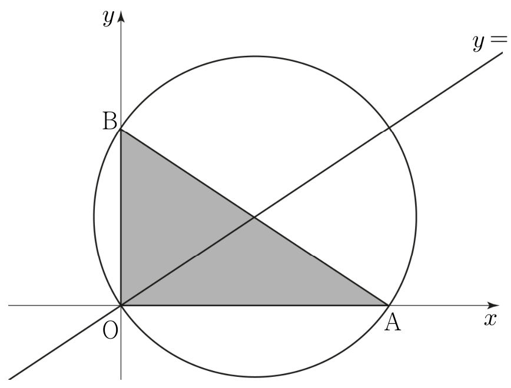

① $\frac{6}{5}$② $\frac{7}{5}$③ $\frac{8}{5}$④ $\frac{9}{5}$⑤ $2$
원본 정답 ④
원본 풀이 (내부용)[출제의도] 삼각함수 사이의 관계 이해하기
\(
\tan\theta=\frac35\quad(0<\theta<\frac{\pi}{2})
\)
이므로 \(\sin\theta=\frac35\).
\(
\cos(\frac{\pi}{2}-\theta)+2\sin(\pi-\theta)
=\sin\theta+2\sin\theta
=3\sin\theta=\frac95
\)
생성기 숫자판 1/6 · G2M1-02b#3$\frac{\pi}{2}<\theta<\pi$인 $\theta$에 대하여 $\tan\theta=-\frac{5}{12}$일 때, $2\sin\left(-\theta\right)+\sin\left(\frac{\pi}{2}+\theta\right)$의 값으로 옳은 것을 고르세요.
① $-\frac{22}{13}$② $-\frac{21}{13}$③ $-\frac{20}{13}$④ $-\frac{19}{13}$⑤ $-\frac{18}{13}$
생성기 숫자판 2/6 · G2M1-02b#3$0<\theta<\frac{\pi}{2}$인 $\theta$에 대하여 $\tan\theta=\frac{12}{5}$일 때, $\cos\left(-\theta\right)-\cos\left(\pi+\theta\right)$의 값으로 옳은 것을 고르세요.
① $-\frac{10}{13}$② $-\frac{5}{13}$③ $0$④ $\frac{5}{13}$⑤ $\frac{10}{13}$
생성기 숫자판 3/6 · G2M1-02b#3$\frac{3}{2}\pi<\theta<2\pi$인 $\theta$에 대하여 $\tan\theta=-\frac{3}{4}$일 때, $5\cos\left(2\pi-\theta\right)+2\sin\left(\frac{3}{2}\pi-\theta\right)$의 값으로 옳은 것을 고르세요.
① $\frac{8}{5}$② $\frac{9}{5}$③ $2$④ $\frac{11}{5}$⑤ $\frac{12}{5}$
생성기 숫자판 4/6 · G2M1-02b#3$\pi<\theta<\frac{3}{2}\pi$인 $\theta$에 대하여 $\tan\theta=\frac{4}{3}$일 때, $2\cos\left(\pi-\theta\right)+3\cos\left(\frac{3}{2}\pi+\theta\right)$의 값으로 옳은 것을 고르세요.
① $-\frac{7}{5}$② $-\frac{6}{5}$③ $-1$④ $-\frac{4}{5}$⑤ $-\frac{3}{5}$
생성기 숫자판 6/6 · G2M1-02b#3$\pi<\theta<\frac{3}{2}\pi$인 $\theta$에 대하여 $\tan\theta=\frac{5}{12}$일 때, $5\sin\left(\frac{3}{2}\pi-\theta\right)$의 값으로 옳은 것을 고르세요.
① $\frac{60}{13}$② $\frac{61}{13}$③ $\frac{62}{13}$④ $\frac{63}{13}$⑤ $\frac{64}{13}$
원본 (내부용)$-3 \le x \le 3$에서 함수 $f ( x ) =\log_{ 2} ( x^{2} -4x+20 )$의 최솟값은? [$3$점]
① $3$② $4$③ $5$④ $6$⑤ $7$
원본 정답 ②
원본 풀이 (내부용)[출제의도] 로그함수의 그래프 이해하기
함수 \(f(x)=\log_2(x^2-4x+20)\)의 밑은 1보다 크므로 진수 \((x^2-4x+20)\)이 최소일 때, 함수 \(f(x)\)는 최솟값을 갖는다.
\(
x^2-4x+20=(x-2)^2+16
\)
이므로 \(-3\le x\le3\)에서
\(
x^2-4x+20
\)
은 \(x=2\)일 때 최솟값 16을 갖는다.
따라서 함수 \(f(x)\)의 최솟값은 \(\log_2 16=4\).
생성기 숫자판 1/6 · G2M1-01b#2$0\le x\le 6$에서 함수 $f\left(x\right)=\log_{2}\left(x^{2}-6x+17\right)$의 최솟값으로 옳은 것을 고르세요.
원본 (내부용)두 곡선 $y= ( \frac{1}{3} )^{x}$, $y= ( \frac{1}{9} )^{x}$이 직선 $y=9$와 만나는 점을 각각 $\mathrm{A}$, $\mathrm{B}$라 할 때, 삼각형 $\mathrm{OAB}$의 넓이는? (단, $\mathrm{O}$는 원점이다.) [$3$점]
① $\frac{9}{2}$② $5$③ $\frac{11}{2}$④ $6$⑤ $\frac{13}{2}$
원본 정답 ①
원본 풀이 (내부용)[출제의도] 지수함수의 그래프 이해하기
곡선 \(y=(\frac13)^x\)와 직선 \(y=9\)의 만나는 점의 \(x\)좌표는 \(-2\)이므로 \(A(-2,9)\).
곡선 \(y=(\frac19)^x\)와 직선 \(y=9\)의 만나는 점의 \(x\)좌표는 \(-1\)이므로 \(B(-1,9)\).
따라서 삼각형 \(OAB\)의 넓이는
\(
\frac12\times1\times9=\frac92
\)
생성기 숫자판 1/6 · G2M1-04b#8두 곡선 $y=\left(\frac{1}{2}\right)^{x}$, $y=\left(\frac{1}{4}\right)^{x}$이 직선 $y=16$을 만나는 점을 각각 $\mathrm{A}$, $\mathrm{B}$라 할 때, 삼각형 $\mathrm{OAB}$의 넓이로 옳은 것을 고르세요. (단, $\mathrm{O}$는 원점입니다.)
생성기 숫자판 2/6 · G2M1-04b#8두 곡선 $y=\left(\frac{1}{5}\right)^{x}$, $y=\left(\frac{1}{25}\right)^{x}$이 직선 $y=625$를 만나는 점을 각각 $\mathrm{A}$, $\mathrm{B}$라 할 때, 삼각형 $\mathrm{OAB}$의 넓이로 옳은 것을 고르세요. (단, $\mathrm{O}$는 원점입니다.)
생성기 숫자판 3/6 · G2M1-04b#8두 곡선 $y=\left(\frac{1}{2}\right)^{x}$, $y=\left(\frac{1}{4}\right)^{x}$이 직선 $y=64$를 만나는 점을 각각 $\mathrm{A}$, $\mathrm{B}$라 할 때, 삼각형 $\mathrm{OAB}$의 넓이로 옳은 것을 고르세요. (단, $\mathrm{O}$는 원점입니다.)
생성기 숫자판 4/6 · G2M1-04b#8두 곡선 $y=\left(\frac{1}{2}\right)^{x}$, $y=\left(\frac{1}{4}\right)^{x}$이 직선 $y=256$을 만나는 점을 각각 $\mathrm{A}$, $\mathrm{B}$라 할 때, 삼각형 $\mathrm{OAB}$의 넓이로 옳은 것을 고르세요. (단, $\mathrm{O}$는 원점입니다.)
생성기 숫자판 5/6 · G2M1-04b#8두 곡선 $y=\left(\frac{1}{7}\right)^{x}$, $y=\left(\frac{1}{49}\right)^{x}$이 직선 $y=2401$을 만나는 점을 각각 $\mathrm{A}$, $\mathrm{B}$라 할 때, 삼각형 $\mathrm{OAB}$의 넓이로 옳은 것을 고르세요. (단, $\mathrm{O}$는 원점입니다.)
생성기 숫자판 6/6 · G2M1-04b#8두 곡선 $y=\left(\frac{1}{5}\right)^{x}$, $y=\left(\frac{1}{25}\right)^{x}$이 직선 $y=25$를 만나는 점을 각각 $\mathrm{A}$, $\mathrm{B}$라 할 때, 삼각형 $\mathrm{OAB}$의 넓이로 옳은 것을 고르세요. (단, $\mathrm{O}$는 원점입니다.)
① $\frac{23}{2}$② $12$③ $\frac{25}{2}$④ $13$⑤ $\frac{27}{2}$
원본 (내부용)상수 $a$$( a>1 )$에 대하여 함수 $y= | a^{x} -a |$의 그래프가 $x$축, $y$축과 만나는 점을 각각 $\mathrm{A}$, $\mathrm{B}$, 직선 $y=a$와 만나는 점을 $\mathrm{C}$라 하고, 점 $\mathrm{C}$에서 $x$축에 내린 수선의 발을 $\mathrm{H}$라 하자. $\overline{AH} =1$일 때, 선분 $\mathrm{BC}$의 길이는? [$3$점]
① $2$② $\sqrt{5}$③ $\sqrt{6}$④ $\sqrt{7}$⑤ $2 \sqrt{2}$ $x$ $y$ $\mathrm{O}$ $\mathrm{A}$ $\mathrm{C}$ $\mathrm{H}$ $y= | a^{x} -a |$ $y=a$ $\mathrm{B}$
원본 정답 ②
원본 풀이 (내부용)[출제의도] 지수함수의 그래프를 활용하여 문제 해결하기
점 \(A\)의 좌표는 \((1,0)\)이고 \(\overline{AH}=1\)이므로 점 \(C\)의 좌표는 \((2,a)\).
\(
a^2-a=a\quad(a>1)
\)
이므로 \(a=2\).
\(
|2^0-2|=|-1|=1
\)
이므로 점 \(B\)의 좌표는 \((0,1)\).
따라서 \(\overline{BC}=\sqrt5\).
생성기 숫자판 1/6 · G2M1-04b#9상수 $a\ \left(a>1\right)$에 대하여 함수 $y=\left|a^{x}-a\right|$의 그래프가 $x$축, $y$축과 만나는 점을 각각 $\mathrm{A}$, $\mathrm{B}$, 직선 $y=8a$와 만나는 점을 $\mathrm{C}$라 하고, 점 $\mathrm{C}$에서 $x$축에 내린 수선의 발을 $\mathrm{H}$라 합시다. $\overline{\mathrm{AH}}=2$일 때, 선분 $\mathrm{BC}$의 길이로 옳은 것을 고르세요.
① $7\sqrt{10}$② $\sqrt{491}$③ $2\sqrt{123}$④ $\sqrt{493}$⑤ $\sqrt{494}$
정답④ $\sqrt{493}$ $y=\left|a^{x}-a\right|$는 $x=1$일 때 $0$이므로 $\mathrm{A}\left(1,\ 0\right)$, $x=0$일 때 $a-1$이므로 $\mathrm{B}\left(0,\ a-1\right)$ 점 $\mathrm{C}$에서 $a^{x}-a=8a$, $a^{x}=9a$이므로 $x=1+\log_{a}9$ $\overline{\mathrm{AH}}=\log_{a}9=2$에서 $a=3$ $\mathrm{B}\left(0,\ 2\right)$, $\mathrm{C}\left(3,\ 24\right)$이므로 $\overline{\mathrm{BC}}=\sqrt{3^{2}+22^{2}}=\sqrt{493}$
숫자: 원본 1 1 3 → 쌍둥이 1 8 2 · 같은 수: 1
생성기 숫자판 2/6 · G2M1-04b#9상수 $a\ \left(a>1\right)$에 대하여 함수 $y=\left|a^{x}-a\right|$의 그래프가 $x$축, $y$축과 만나는 점을 각각 $\mathrm{A}$, $\mathrm{B}$, 직선 $y=7a$와 만나는 점을 $\mathrm{C}$라 하고, 점 $\mathrm{C}$에서 $x$축에 내린 수선의 발을 $\mathrm{H}$라 합시다. $\overline{\mathrm{AH}}=3$일 때, 선분 $\mathrm{BC}$의 길이로 옳은 것을 고르세요.
① $\sqrt{182}$② $\sqrt{183}$③ $2\sqrt{46}$④ $\sqrt{185}$⑤ $\sqrt{186}$
정답④ $\sqrt{185}$ $y=\left|a^{x}-a\right|$는 $x=1$일 때 $0$이므로 $\mathrm{A}\left(1,\ 0\right)$, $x=0$일 때 $a-1$이므로 $\mathrm{B}\left(0,\ a-1\right)$ 점 $\mathrm{C}$에서 $a^{x}-a=7a$, $a^{x}=8a$이므로 $x=1+\log_{a}8$ $\overline{\mathrm{AH}}=\log_{a}8=3$에서 $a=2$ $\mathrm{B}\left(0,\ 1\right)$, $\mathrm{C}\left(4,\ 14\right)$이므로 $\overline{\mathrm{BC}}=\sqrt{4^{2}+13^{2}}=\sqrt{185}$
숫자: 원본 1 1 3 → 쌍둥이 1 7 3 · 같은 수: 1 3
생성기 숫자판 3/6 · G2M1-04b#9상수 $a\ \left(a>1\right)$에 대하여 함수 $y=\left|a^{x}-a\right|$의 그래프가 $x$축, $y$축과 만나는 점을 각각 $\mathrm{A}$, $\mathrm{B}$, 직선 $y=5a$와 만나는 점을 $\mathrm{C}$라 하고, 점 $\mathrm{C}$에서 $x$축에 내린 수선의 발을 $\mathrm{H}$라 합시다. $\overline{\mathrm{AH}}=1$일 때, 선분 $\mathrm{BC}$의 길이로 옳은 것을 고르세요.
① $\sqrt{626}$② $\sqrt{627}$③ $2\sqrt{157}$④ $\sqrt{629}$⑤ $3\sqrt{70}$
정답④ $\sqrt{629}$ $y=\left|a^{x}-a\right|$는 $x=1$일 때 $0$이므로 $\mathrm{A}\left(1,\ 0\right)$, $x=0$일 때 $a-1$이므로 $\mathrm{B}\left(0,\ a-1\right)$ 점 $\mathrm{C}$에서 $a^{x}-a=5a$, $a^{x}=6a$이므로 $x=1+\log_{a}6$ $\overline{\mathrm{AH}}=\log_{a}6=1$에서 $a=6$ $\mathrm{B}\left(0,\ 5\right)$, $\mathrm{C}\left(2,\ 30\right)$이므로 $\overline{\mathrm{BC}}=\sqrt{2^{2}+25^{2}}=\sqrt{629}$
숫자: 원본 1 1 3 → 쌍둥이 1 5 1 · 같은 수: 1
생성기 숫자판 4/6 · G2M1-04b#9상수 $a\ \left(a>1\right)$에 대하여 함수 $y=\left|a^{x}-a\right|$의 그래프가 $x$축, $y$축과 만나는 점을 각각 $\mathrm{A}$, $\mathrm{B}$, 직선 $y=a$와 만나는 점을 $\mathrm{C}$라 하고, 점 $\mathrm{C}$에서 $x$축에 내린 수선의 발을 $\mathrm{H}$라 합시다. $\overline{\mathrm{AH}}=1$일 때, 선분 $\mathrm{BC}$의 길이로 옳은 것을 고르세요.
① $\sqrt{2}$② $\sqrt{3}$③ $2$④ $\sqrt{5}$⑤ $\sqrt{6}$
정답④ $\sqrt{5}$ $y=\left|a^{x}-a\right|$는 $x=1$일 때 $0$이므로 $\mathrm{A}\left(1,\ 0\right)$, $x=0$일 때 $a-1$이므로 $\mathrm{B}\left(0,\ a-1\right)$ 점 $\mathrm{C}$에서 $a^{x}-a=a$, $a^{x}=2a$이므로 $x=1+\log_{a}2$ $\overline{\mathrm{AH}}=\log_{a}2=1$에서 $a=2$ $\mathrm{B}\left(0,\ 1\right)$, $\mathrm{C}\left(2,\ 2\right)$이므로 $\overline{\mathrm{BC}}=\sqrt{2^{2}+1^{2}}=\sqrt{5}$
숫자: 원본 1 1 3 → 쌍둥이 1 1 · 같은 수: 1
생성기 숫자판 5/6 · G2M1-04b#9상수 $a\ \left(a>1\right)$에 대하여 함수 $y=\left|a^{x}-a\right|$의 그래프가 $x$축, $y$축과 만나는 점을 각각 $\mathrm{A}$, $\mathrm{B}$, 직선 $y=4a$와 만나는 점을 $\mathrm{C}$라 하고, 점 $\mathrm{C}$에서 $x$축에 내린 수선의 발을 $\mathrm{H}$라 합시다. $\overline{\mathrm{AH}}=1$일 때, 선분 $\mathrm{BC}$의 길이로 옳은 것을 고르세요.
① $\sqrt{257}$② $\sqrt{258}$③ $\sqrt{259}$④ $2\sqrt{65}$⑤ $3\sqrt{29}$
정답④ $2\sqrt{65}$ $y=\left|a^{x}-a\right|$는 $x=1$일 때 $0$이므로 $\mathrm{A}\left(1,\ 0\right)$, $x=0$일 때 $a-1$이므로 $\mathrm{B}\left(0,\ a-1\right)$ 점 $\mathrm{C}$에서 $a^{x}-a=4a$, $a^{x}=5a$이므로 $x=1+\log_{a}5$ $\overline{\mathrm{AH}}=\log_{a}5=1$에서 $a=5$ $\mathrm{B}\left(0,\ 4\right)$, $\mathrm{C}\left(2,\ 20\right)$이므로 $\overline{\mathrm{BC}}=\sqrt{2^{2}+16^{2}}=2\sqrt{65}$
숫자: 원본 1 1 3 → 쌍둥이 1 4 1 · 같은 수: 1
생성기 숫자판 6/6 · G2M1-04b#9상수 $a\ \left(a>1\right)$에 대하여 함수 $y=\left|a^{x}-a\right|$의 그래프가 $x$축, $y$축과 만나는 점을 각각 $\mathrm{A}$, $\mathrm{B}$, 직선 $y=3a$와 만나는 점을 $\mathrm{C}$라 하고, 점 $\mathrm{C}$에서 $x$축에 내린 수선의 발을 $\mathrm{H}$라 합시다. $\overline{\mathrm{AH}}=1$일 때, 선분 $\mathrm{BC}$의 길이로 옳은 것을 고르세요.
① $\sqrt{82}$② $\sqrt{83}$③ $2\sqrt{21}$④ $\sqrt{85}$⑤ $\sqrt{86}$
정답④ $\sqrt{85}$ $y=\left|a^{x}-a\right|$는 $x=1$일 때 $0$이므로 $\mathrm{A}\left(1,\ 0\right)$, $x=0$일 때 $a-1$이므로 $\mathrm{B}\left(0,\ a-1\right)$ 점 $\mathrm{C}$에서 $a^{x}-a=3a$, $a^{x}=4a$이므로 $x=1+\log_{a}4$ $\overline{\mathrm{AH}}=\log_{a}4=1$에서 $a=4$ $\mathrm{B}\left(0,\ 3\right)$, $\mathrm{C}\left(2,\ 12\right)$이므로 $\overline{\mathrm{BC}}=\sqrt{2^{2}+9^{2}}=\sqrt{85}$
숫자: 원본 1 1 3 → 쌍둥이 1 3 1 · 같은 수: 1 3
14. 2019년 9월 가형 14번 · 4점 · 수학Ⅰ 수열 · 4점 쌍둥이
원본 (내부용)첫째항과 공차가 모두 $0$이 아닌 등차수열 $\{ a_{n} \}$에 대하여 세 항 $a_{2}$, $a_{5}$, $a_{14}$가 이 순서대로 등비수열을 이룰 때, $\frac{a_{23}}{a_{3}}$의 값은? [$4$점]
① $6$② $7$③ $8$④ $9$⑤ $10$
원본 정답 ④
원본 풀이 (내부용)[출제의도] 등차수열과 등비수열 이해하기
등차수열 \(\{a_n\}\)의 첫째항을 \(a\), 공차를 \(d\)라 하자. 세 항 \(a_2,a_5,a_{14}\)가 이 순서대로 등비수열을 이루므로
\(
(a_5)^2=a_2\times a_{14}
\)
\(
(a+4d)^2=(a+d)(a+13d)
\)
\(
3d^2=6ad
\)
\(d\ne0\)이므로 \(d=2a\).
\(
\frac{a_{23}}{a_3}
=\frac{a+22d}{a+2d}
=\frac{45a}{5a}=9
\)
쌍둥이 1/5 · 4점 쌍둥이첫째항과 공차가 모두 $0$이 아닌 등차수열 $\left\{a_n\right\}$에 대하여 세 항 $a_{2}$, $a_{4}$, $a_{9}$가 이 순서대로 등비수열을 이룰 때, $\frac{a_{14}}{a_{3}}$의 값을 구하세요.
① $\frac{39}{7}$② $\frac{40}{7}$③ $\frac{41}{7}$④ $\frac{42}{7}$⑤ $\frac{43}{7}$
정답② $\frac{40}{7}$ 첫째항을 $A$, 공차를 $d$라 두면 $a_n=A+(n-1)d$입니다. 등비수열 조건 $a_4^2=a_2a_9$를 전개하면 $-3Ad+d^2=0$이므로 $A/d=1/3$입니다. $a_{14}/d=1/3+13=40/3$, $a_3/d=1/3+2=7/3$이므로 비는 $40/7$입니다.
쌍둥이 2/5 · 4점 쌍둥이첫째항과 공차가 모두 $0$이 아닌 등차수열 $\left\{a_{n}\right\}$에 대하여 세 항 $a_{1}$, $a_{3}$, $a_{9}$가 이 순서대로 등비수열을 이룰 때, $\frac{a_{20}}{a_{4}}$의 값으로 옳은 것을 고르세요.
쌍둥이 3/5 · 4점 쌍둥이첫째항과 공차가 모두 $0$이 아닌 등차수열 $\left\{a_{n}\right\}$에 대하여 세 항 $a_{2}$, $a_{4}$, $a_{8}$이 이 순서대로 등비수열을 이룰 때, $\frac{a_{18}}{a_{3}}$의 값으로 옳은 것을 고르세요.
쌍둥이 4/5 · 4점 쌍둥이첫째항과 공차가 모두 $0$이 아닌 등차수열 $\left\{a_{n}\right\}$에 대하여 세 항 $a_{1}$, $a_{4}$, $a_{13}$이 이 순서대로 등비수열을 이룰 때, $\frac{a_{16}}{a_{1}}$의 값으로 옳은 것을 고르세요.
원본 (내부용)그림과 같이 두 양수 $a$, $b$에 대하여 함수 $f(x)=asinbx$ $( 0 \le x \le \frac{ \pi }{b} )$ 의 그래프가 직선 $y=a$와 만나는 점을 $\mathrm{A}$, $x$축과 만나는 점 중에서 원점이 아닌 점을 $\mathrm{B}$라 하자. $\angle \mathrm{OAB} = \frac{\pi }{2}$인 삼각형 $\mathrm{OAB}$의 넓이가 $4$일 때, $a+b$의 값은? (단, $\mathrm{O}$는 원점이다.) [$4$점] $y=f(x)$ $\mathrm{O}$ $\mathrm{A}$ $\mathrm{B}$ $x$ $y$ $y=a$
원본 풀이 (내부용)[출제의도] 삼각함수의 그래프 이해하기
함수 \(f(x)=a\sin bx\)의 주기가 \(\frac{2\pi}{b}\)이므로 두 점 \(A,B\)의 좌표는
\(
A\left(\frac{\pi}{2b},a\right),\quad
B\left(\frac{\pi}{b},0\right).
\)
점 \(A\)에서 \(x\)축에 내린 수선의 발을 \(H\)라 하자.
\(
\overline{OH}=\overline{BH}=\overline{AH}=a
\)
이므로 \(\frac{\pi}{b}=2a\).
삼각형 \(OAB\)의 넓이는 4이므로
\(
\frac12\times2a\times a=4,\quad a=2
\)
\(
b=\frac{\pi}{2a}=\frac{\pi}{4}
\)
따라서
\(
a+b=2+\frac{\pi}{4}
\)
쌍둥이 1/5 · 4점 쌍둥이양수 $a,b$에 대하여 $f(x)=a\sin bx$ ($0\le x\le\pi/b$)의 그래프가 $y=a$와 만나는 점을 $A$, 원점이 아닌 $x$축 교점을 $B$라 합니다. $\angle OAB=\pi/2$이고 삼각형 $OAB$의 넓이가 16일 때 $a+b$를 구하세요.
① $4+\pi/8$② $4+\pi/6$③ $4+\pi/4$④ $5+\pi/8$⑤ $5+\pi/6$
정답① $4+\pi/8$ $A=(\pi/(2b),a)$, $B=(\pi/b,0)$입니다. 직각 조건은 $\overrightarrow{AO}\cdot\overrightarrow{AB}=0$에서 $a=\pi/(2b)$를 줍니다. 삼각형 넓이는 $\pi a/(2b)=16$입니다. 대입하면 $a^2=16$, 따라서 $a=4$이고 $b=\pi/8$입니다. 그러므로 $a+b=4+\pi/8$입니다.
숫자: 원본 0 2 4 4 → 쌍둥이 0 2 16 · 같은 수: 0 2
쌍둥이 2/5 · 4점 쌍둥이두 양수 $a$, $b$에 대하여 함수 $f(x)=a\sin bx\ \left(0\le x\le\frac{\pi}{b}\right)$의 그래프가 직선 $y=a$와 만나는 점을 $\mathrm{A}$, $x$축과 만나는 점 중에서 원점이 아닌 점을 $\mathrm{B}$라 합니다. $\angle\mathrm{OAB}=\frac{\pi}{2}$인 삼각형 $\mathrm{OAB}$의 넓이가 $9$일 때, $a+b$의 값으로 옳은 것을 고르세요. (단, $\mathrm{O}$는 원점입니다.)
정답$\frac{\pi}{6}+3$ $\mathrm{A}\left(\frac{\pi}{2b},\ a\right)$, $\mathrm{B}\left(\frac{\pi}{b},\ 0\right)$이고 삼각형 $\mathrm{OAB}$는 $\overline{\mathrm{OA}}=\overline{\mathrm{AB}}$인 이등변삼각형입니다 $\angle\mathrm{OAB}=\frac{\pi}{2}$이면 점 $\mathrm{A}$에서 $x$축까지의 거리가 $\overline{\mathrm{OB}}$의 절반이므로 $a=\frac{\pi}{2b}$ 넓이는 $\frac{1}{2}\times\frac{\pi}{b}\times a=a^{2}=9$이므로 $a=3$, $b=\frac{\pi}{6}$ $a+b=3+\frac{\pi}{6}$
숫자: 원본 0 2 4 4 → 쌍둥이 0 2 9 · 같은 수: 0 2
쌍둥이 3/5 · 4점 쌍둥이두 양수 $a$, $b$에 대하여 함수 $f(x)=a\sin bx\ \left(0\le x\le\frac{\pi}{b}\right)$의 그래프가 직선 $y=a$와 만나는 점을 $\mathrm{A}$, $x$축과 만나는 점 중에서 원점이 아닌 점을 $\mathrm{B}$라 합니다. $\angle\mathrm{OAB}=\frac{\pi}{2}$인 삼각형 $\mathrm{OAB}$의 넓이가 $16$일 때, $a+b$의 값으로 옳은 것을 고르세요. (단, $\mathrm{O}$는 원점입니다.)
정답$\frac{\pi}{8}+4$ $\mathrm{A}\left(\frac{\pi}{2b},\ a\right)$, $\mathrm{B}\left(\frac{\pi}{b},\ 0\right)$이고 삼각형 $\mathrm{OAB}$는 $\overline{\mathrm{OA}}=\overline{\mathrm{AB}}$인 이등변삼각형입니다 $\angle\mathrm{OAB}=\frac{\pi}{2}$이면 점 $\mathrm{A}$에서 $x$축까지의 거리가 $\overline{\mathrm{OB}}$의 절반이므로 $a=\frac{\pi}{2b}$ 넓이는 $\frac{1}{2}\times\frac{\pi}{b}\times a=a^{2}=16$이므로 $a=4$, $b=\frac{\pi}{8}$ $a+b=4+\frac{\pi}{8}$
숫자: 원본 0 2 4 4 → 쌍둥이 0 2 16 · 같은 수: 0 2
쌍둥이 4/5 · 4점 쌍둥이두 양수 $a$, $b$에 대하여 함수 $f(x)=a\sin bx\ \left(0\le x\le\frac{\pi}{b}\right)$의 그래프가 직선 $y=a$와 만나는 점을 $\mathrm{A}$, $x$축과 만나는 점 중에서 원점이 아닌 점을 $\mathrm{B}$라 합니다. $\angle\mathrm{OAB}=\frac{\pi}{2}$인 삼각형 $\mathrm{OAB}$의 넓이가 $25$일 때, $a+b$의 값으로 옳은 것을 고르세요. (단, $\mathrm{O}$는 원점입니다.)
정답$\frac{\pi}{10}+5$ $\mathrm{A}\left(\frac{\pi}{2b},\ a\right)$, $\mathrm{B}\left(\frac{\pi}{b},\ 0\right)$이고 삼각형 $\mathrm{OAB}$는 $\overline{\mathrm{OA}}=\overline{\mathrm{AB}}$인 이등변삼각형입니다 $\angle\mathrm{OAB}=\frac{\pi}{2}$이면 점 $\mathrm{A}$에서 $x$축까지의 거리가 $\overline{\mathrm{OB}}$의 절반이므로 $a=\frac{\pi}{2b}$ 넓이는 $\frac{1}{2}\times\frac{\pi}{b}\times a=a^{2}=25$이므로 $a=5$, $b=\frac{\pi}{10}$ $a+b=5+\frac{\pi}{10}$
숫자: 원본 0 2 4 4 → 쌍둥이 0 2 25 · 같은 수: 0 2
쌍둥이 5/5 · 4점 쌍둥이양수 $a,b$에 대하여 $f(x)=a\sin bx$ ($0\le x\le\pi/b$)의 그래프가 $y=a$와 만나는 점을 $A$, 원점이 아닌 $x$축 교점을 $B$라 합니다. $\angle OAB=\pi/2$이고 삼각형 $OAB$의 넓이가 36일 때 $a+b$를 구하세요.
① $6+\pi/16$② $6+\pi/14$③ $6+\pi/12$④ $7+\pi/12$⑤ $7+\pi/10$
정답③ $6+\pi/12$ 두 점은 $A=(\pi/(2b),a)$, $B=(\pi/b,0)$입니다. 내적이 0이어야 하므로 $a=\pi/(2b)$입니다. 넓이는 $\pi a/(2b)=36$입니다. 위 관계를 대입하면 $a^2=36$, 즉 $a=6$, $b=\pi/12$입니다. 따라서 $a+b=6+\pi/12$입니다.
숫자: 원본 0 2 4 4 → 쌍둥이 0 2 36 · 같은 수: 0 2
16. 2019년 9월 가형 16번 · 4점 · 수학Ⅰ 수열 · 4점 쌍둥이
원본 (내부용)자연수 $n$에 대하여 $0<x<n \pi$일 때, 방정식 $sinx= \frac{3}{n}$의 모든 실근의 개수를 $a_{n}$이라 하자. $\sum_{n=1}^{7} a_{n}$의 값은? [$4$점]
① $26$② $27$③ $28$④ $29$⑤ $30$
원본 정답 ①
원본 풀이 (내부용)[출제의도] 삼각함수의 그래프를 활용하여 문제 해결하기
i) \(n=1,2\)일 때,
\(
\frac3n>1
\)
이므로 방정식 \(\sin x=\frac3n\)의 실근의 개수 \(a_n=0\).
ii) \(n=3\)일 때,
\(
\frac3n=1
\)
이므로 방정식 \(\sin x=\frac3n\)의 실근의 개수 \(a_3=2\).
iii) \(n\ge4\)일 때, 자연수 \(k\;(k\ge2)\)에 대하여
\(
a_n=
\begin{cases}
n & (n=2k)\\
n+1 & (n=2k+1)
\end{cases}
\)
\(
\sum_{n=1}^{7}a_n=0+0+2+4+6+6+8=26
\)
쌍둥이 1/5 · 4점 쌍둥이자연수 $n$에 대하여 $0<x<n\pi$일 때, 방정식 $\sin x=\frac{3}{n}$의 모든 실근의 개수를 $a_{n}$이라 하겠습니다. $\sum_{n=1}^{9}a_{n}$의 값으로 옳은 것을 고르세요.
쌍둥이 4/5 · 4점 쌍둥이자연수 $n$에 대하여 $0<x<n\pi$일 때, 방정식 $\sin x=\frac{2}{n}$의 모든 실근의 개수를 $a_n$이라 하겠습니다. $\sum_{n=1}^{10}a_n$의 값을 구하세요.
① $52$② $56$③ $60$④ $64$⑤ $68$
정답③ $60$ 각 양의 반주기 $(2k\pi,(2k+1)\pi)$에서 $\sin x=2/n$은 두 해를 가집니다. 따라서 $a_n=2\lceil n/2\rceil$입니다. n=1부터 10까지의 값들을 짝지어 더하면 합은 $60$입니다.
숫자: 원본 0 3 1 4 → 쌍둥이 0 2 1 · 같은 수: 0 1
쌍둥이 5/5 · 4점 쌍둥이자연수 $n$에 대하여 $0<x<n\pi$일 때, 방정식 $\sin x=\frac{2}{n}$의 모든 실근의 개수를 $a_n$이라 하겠습니다. $\sum_{n=1}^{7}a_n$의 값을 구하세요.
① $24$② $28$③ $32$④ $36$⑤ $40$
정답③ $32$ 각 양의 반주기 $(2k\pi,(2k+1)\pi)$에서 $\sin x=2/n$은 두 해를 가집니다. 따라서 $a_n=2\lceil n/2\rceil$입니다. n=1부터 7까지의 값들을 짝지어 더하면 합은 $32$입니다.
숫자: 원본 0 3 1 4 → 쌍둥이 0 2 1 · 같은 수: 0 1
17. 2019년 9월 가형 17번 · 4점 · 수학Ⅰ 수열 · 4점 쌍둥이
원본 (내부용)그림과 같이 자연수 $n$에 대하여 중심이 직선 $y= \frac{n}{n+1} x$ 위에 있는 원이 원점을 지난다. 이 원이 $x$축과 만나는 점 중에서 $x$좌표가 양수인 점을 $\mathrm{A}$, $y$축과 만나는 점 중에서 $y$좌표가 양수인 점을 $\mathrm{B}$라 하자. $\overline{\mathrm{OB}}=2n$이고 삼각형 $\mathrm{OAB}$의 넓이를 $S_{n}$이라 할 때, $\sum_{n=1}^{10} \frac{1}{S_{n}}$의 값은? (단, $\mathrm{O}$는 원점이다.) [$4$점] $\mathrm{O}$ $\mathrm{A}$ $\mathrm{B}$ $x$ $y$ $y= \frac{n}{n+1} x$

① $\frac{5}{11}$② $\frac{6}{11}$③ $\frac{7}{11}$④ $\frac{8}{11}$⑤ $\frac{9}{11}$
원본 정답 ①
원본 풀이 (내부용)[출제의도] 여러 가지 수열의 합을 활용하여 문제 해결하기
\(
\angle BOA=\frac{\pi}{2}
\)
이므로 선분 \(AB\)는 원의 지름이다. 원의 중심을 \(C\)라 하면 점 \(C\)는 선분 \(AB\)의 중점이고, \(\overline{OB}=n\)이므로 점 \(C\)의 \(y\)좌표는 \(n\)이다. 점 \(C\)는 직선 \(y=\frac{n}{n+1}x\) 위의 점이므로 점 \(C\)의 좌표는 \((n+1,n)\)이다.
\(
S_n=\frac12\times2n\times2(n+1)=2n(n+1)
\)
\(
\sum_{n=1}^{10}\frac1{S_n}
=\sum_{n=1}^{10}\frac1{2n(n+1)}
=\frac12\sum_{n=1}^{10}\left(\frac1n-\frac1{n+1}\right)
\)
\(
=\frac12\left\{\left(1-\frac12\right)+
\left(\frac12-\frac13\right)+\cdots+
\left(\frac1{10}-\frac1{11}\right)\right\}
=\frac12\left(1-\frac1{11}\right)=\frac5{11}
\)
쌍둥이 1/5 · 4점 쌍둥이자연수 $n$에 대하여 중심이 직선 $y=\frac{n}{n+2}x$ 위에 있는 원이 원점을 지납니다. 이 원이 $x$축과 만나는 점 중에서 $x$좌표가 양수인 점을 $\mathrm{A}$, $y$축과 만나는 점 중에서 $y$좌표가 양수인 점을 $\mathrm{B}$라 합니다. $\overline{\mathrm{OB}}=3n$이고 삼각형 $\mathrm{OAB}$의 넓이를 $S_{n}$이라 할 때, $\sum_{n=1}^{8}\frac{1}{S_{n}}$의 값을 구하세요.
① $\frac{56}{405}$② $\frac{57}{405}$③ $\frac{58}{405}$④ $\frac{59}{405}$⑤ $\frac{60}{405}$
정답③ $\frac{58}{405}$ 원의 중심을 $(h,\ k)$라 하면 원점을 지나는 원의 축 절편은 $\mathrm{A}(2h,\ 0)$, $\mathrm{B}(0,\ 2k)$입니다. $2k=3n$이므로 $k=\frac{3n}{2}$이고, $k=\frac{n}{n+2}h$에서 $h=\frac{3(n+2)}{2}$입니다. 따라서 $\mathrm{OA}=3(n+2)$. $S_n=\frac12\cdot3n\cdot3(n+2)=\frac{9}{2}n(n+2)$이므로 $\frac1{S_n}=\frac19\left(\frac1n-\frac1{n+2}\right)$. $\sum_{n=1}^{8}\frac1{S_n}=\frac19\left(1+\frac12-\frac19-\frac1{10}\right)=\frac{58}{405}$.
숫자: 원본 1 2 1 1 4 1 → 쌍둥이 2 3 1 1 · 같은 수: 1 2
쌍둥이 2/5 · 4점 쌍둥이자연수 $n$에 대하여 중심이 직선 $y=\frac{n}{n+1}x$ 위에 있는 원이 원점을 지납니다. 이 원이 $x$축과 만나는 점 중에서 $x$좌표가 양수인 점을 $\mathrm{A}$, $y$축과 만나는 점 중에서 $y$좌표가 양수인 점을 $\mathrm{B}$라 합니다. $\overline{\mathrm{OB}}=6n$이고 삼각형 $\mathrm{OAB}$의 넓이를 $S_n$이라 할 때, $\sum_{n=1}^{15}\frac{1}{S_n}$의 값을 구하세요.
① $\frac{1}{24}$② $\frac{1}{20}$③ $\frac{5}{96}$④ $\frac{1}{18}$⑤ $\frac{1}{16}$
정답③ $\frac{5}{96}$ 원의 중심을 $(h,\ k)$라 하면 원점을 지나는 원의 축 절편은 $\mathrm{A}(2h,\ 0)$, $\mathrm{B}(0,\ 2k)$입니다. $2k=6n$이므로 $k=3n$이고, $k=\frac{n}{n+1}h$에서 $h=3(n+1)$입니다. 따라서 $\mathrm{OA}=6(n+1)$. $S_n=\frac12\cdot6n\cdot6(n+1)=18n(n+1)$이므로 $\frac1{S_n}=\frac1{18}\left(\frac1n-\frac1{n+1}\right)$. $\sum_{n=1}^{15}\frac1{S_n}=\frac1{18}\left(1-\frac1{16}\right)=\frac5{96}$.
숫자: 원본 1 2 1 1 4 1 → 쌍둥이 1 6 1 1 · 같은 수: 1
쌍둥이 3/5 · 4점 쌍둥이자연수 $n$에 대하여 중심이 직선 $y=\frac{n}{n+3}x$ 위에 있는 원이 원점을 지납니다. 이 원이 $x$축과 만나는 점 중에서 $x$좌표가 양수인 점을 $\mathrm{A}$, $y$축과 만나는 점 중에서 $y$좌표가 양수인 점을 $\mathrm{B}$라 합니다. $\overline{\mathrm{OB}}=3n$이고 삼각형 $\mathrm{OAB}$의 넓이를 $S_{n}$이라 할 때, $\sum_{n=1}^{3}\frac{1}{S_{n}}$의 값을 구하세요.
① $\frac{71}{810}$② $\frac{72}{810}$③ $\frac{73}{810}$④ $\frac{74}{810}$⑤ $\frac{75}{810}$
정답③ $\frac{73}{810}$ 원의 중심을 $(h,\ k)$라 하면 원점을 지나는 원의 축 절편은 $\mathrm{A}(2h,\ 0)$, $\mathrm{B}(0,\ 2k)$입니다. $2k=3n$이므로 $k=\frac{3n}{2}$이고, $k=\frac{n}{n+3}h$에서 $h=\frac{3(n+3)}{2}$입니다. 따라서 $\mathrm{OA}=3(n+3)$. $S_n=\frac12\cdot3n\cdot3(n+3)=\frac{9}{2}n(n+3)$이므로 $\frac1{S_n}=\frac{2}{27}\left(\frac1n-\frac1{n+3}\right)$. $\sum_{n=1}^{3}\frac1{S_n}=\frac{2}{27}\left(1+\frac12+\frac13-\frac14-\frac15-\frac16\right)=\frac{73}{810}$.
숫자: 원본 1 2 1 1 4 1 → 쌍둥이 3 3 1 1 · 같은 수: 1
쌍둥이 4/5 · 4점 쌍둥이자연수 $n$에 대하여 중심이 $y=\frac{n}{n+1}x$ 위에 있는 원이 원점을 지납니다. 양의 $x$축 교점을 $A$, 양의 $y$축 교점을 $B$라 하고 $OB=3n$이라 합니다. 삼각형 $OAB$의 넓이를 $S_n$이라 할 때 $\sum_{n=1}^{8}1/S_n$을 구하세요.
① $14/81$② $15/81$③ $16/81$④ $17/81$⑤ $18/81$
정답③ $16/81$ 원의 중심은 $(OA/2,OB/2)$입니다. 중심이 직선 $y=\frac{n}{n+1}x$ 위에 있으므로 $OA/OB=(n+1)/n$, 따라서 $OA=3(n+1)$입니다. $S_n=\frac12\cdot3n\cdot3(n+1)=\frac{9}{2}n(n+1)$이므로 $1/S_n=\frac29(1/n-1/(n+1))$입니다. 합은 $\frac29(1-1/9)=16/81$입니다.
숫자: 원본 1 2 1 1 4 1 → 쌍둥이 1 3 1 1 · 같은 수: 1
쌍둥이 5/5 · 4점 쌍둥이자연수 $n$에 대하여 중심이 $y=\frac{n}{n+1}x$ 위에 있는 원이 원점을 지납니다. 양의 $x$축 교점을 $A$, 양의 $y$축 교점을 $B$라 하고 $OB=5n$이라 합니다. 삼각형 $OAB$의 넓이를 $S_n$이라 할 때 $\sum_{n=1}^{6}1/S_n$을 구하세요.
① $10/175$② $11/175$③ $12/175$④ $13/175$⑤ $14/175$
정답③ $12/175$ 중심 좌표는 $(OA/2,OB/2)$이고 직선 기울기 조건에서 $OA/OB=(n+1)/n$입니다. 따라서 $OA=5(n+1)$입니다. $S_n=25n(n+1)/2$이므로 $1/S_n=2/[25n(n+1)]=(2/25)(1/n-1/(n+1))$입니다. $n=1$부터 6까지 합하면 $(2/25)(1-1/7)=12/175$입니다.
숫자: 원본 1 2 1 1 4 1 → 쌍둥이 1 5 1 1 · 같은 수: 1
18. 2019년 9월 가형 18번 · 4점 · 수학Ⅰ 수열 · 4점 쌍둥이
원본 (내부용)일반항이 $a_{n} =n^{2}$인 수열 $\{ a_{n} \}$의 첫째항부터 제$n$항까지의 합을 $S_{n}$이라 하자. 다음은 모든 자연수 $n$에 대하여 $(n+1)S_{n} - \sum_{k=1}^{n} S_{k} = \sum_{k=1}^{n} k^{3}$ $\cdots \cdots (＊)$ 이 성립함을 수학적 귀납법으로 증명한 것이다. (i) $n=1$일 때, (좌변)$=2S_{1} -S_{1} =1$, (우변)$=1$이므로 (＊)이 성립한다. (ii) $n=m$일 때 (＊)이 성립한다고 가정하면 $(m+1)S_{m} - \sum_{k=1}^{m} S_{k} = \sum_{k=1}^{m} k^{3}$이다. $n=m+1$일 때 (＊)이 성립함을 보이자. $(m+2)S_{m+1} - \sum_{k=1}^{m+1} S_{k}$ $= {\boxed{(가)}} S_{m+1} - \sum_{k=1}^{m} S_{k}$ $= {\boxed{(가)}} S_{m} +$ ${\boxed{(나)}}$$- \sum_{k=1}^{m} S_{k}$ $= \sum_{k=1}^{m+1} k^{3}$이다. 따라서 $n=m+1$일 때도 (＊)이 성립한다. (i), (ii)에 의하여 주어진 식은 모든 자연수 $n$에 대하여 성립한다. 위의 (가), (나)에 알맞은 식을 각각 $f(m)$, $g(m)$이라 할 때, $f(2)+g(1)$의 값은? [$4$점]
① $7$② $8$③ $9$④ $10$⑤ $11$
원본 정답 ⑤
원본 풀이 (내부용)[출제의도] 수학적 귀납법을 활용하여 추론하기
일반항이 \(a_n=n^2\)인 수열 \(\{a_n\}\)의 첫째항부터 제 \(n\)항까지의 합을 \(S_n\)이라 하자.
다음은 모든 자연수 \(n\)에 대하여
\(
(n+1)S_n-\sum_{k=1}^{n}S_k=\sum_{k=1}^{n}k^3\quad\cdots(*)
\)
이 성립함을 수학적 귀납법으로 증명한 것이다.
상자 안 증명:
(i) \(n=1\)일 때,
\(
\text{(좌변)}=2S_1-S_1=1,\qquad \text{(우변)}=1
\)
이므로 \((*)\)이 성립한다.
(ii) \(n=m\)일 때 \((*)\)이 성립한다고 가정하면
\(
(m+1)S_m-\sum_{k=1}^{m}S_k=\sum_{k=1}^{m}k^3
\)
이다. \(n=m+1\)일 때 \((*)\)이 성립함을 보이자.
\(
\begin{aligned}
(m+2)S_{m+1}-\sum_{k=1}^{m+1}S_k
&=(m+2)S_{m+1}-\left(\sum_{k=1}^{m}S_k+S_{m+1}\right)\\
&=(m+1)S_{m+1}-\sum_{k=1}^{m}S_k\\
&=(m+1)(S_m+a_{m+1})-\sum_{k=1}^{m}S_k\\
&=(m+1)S_m+(m+1)^3-\sum_{k=1}^{m}S_k\\
&=\sum_{k=1}^{m}k^3+(m+1)^3\\
&=\sum_{k=1}^{m+1}k^3.
\end{aligned}
\)
따라서 \(n=m+1\)일 때도 \((*)\)이 성립한다. (i), (ii)에 의하여 주어진 식은 모든 자연수 \(n\)에 대하여 성립한다.
\(
f(m)=m+1,\quad g(m)=(m+1)^3
\)
\(
f(2)+g(1)=11
\)
쌍둥이 1/5 · 4점 쌍둥이일반항이 $a_n=n^4$인 수열 $\{a_n\}$의 첫째항부터 제$n$항까지의 합을 $S_n$이라 하자. 다음은 모든 자연수 $n$에 대하여 $(n+1)S_n-\sum_{k=1}^n S_k=\sum_{k=1}^n k^{5}$ 가 성립함을 수학적 귀납법으로 증명한 것이다. (i) $n=1$일 때 좌변과 우변은 모두 $1$이므로 성립한다. (ii) $n=m$일 때 성립한다고 가정하면 $(m+1)S_m-\sum_{k=1}^m S_k=\sum_{k=1}^m k^{5}$이다. $n=m+1$일 때, $(m+2)S_{m+1}-\sum_{k=1}^{m+1}S_k=\boxed{(가)}S_{m+1}-\sum_{k=1}^m S_k=\boxed{(가)}S_m+\boxed{(나)}-\sum_{k=1}^m S_k=\sum_{k=1}^{m+1}k^{5}$이다. (가), (나)에 알맞은 식을 각각 $f(m),g(m)$이라 할 때, $f(3)+g(2)$의 값을 구하시오. [4점]
① $245$② $246$③ $247$④ $248$⑤ $249$
정답③ $247$ $(m+2)S_{m+1}-S_{m+1}=(m+1)S_{m+1}$이므로 $f(m)=m+1$이다. $S_{m+1}=S_m+(m+1)^4$이므로 $(m+1)S_{m+1}=(m+1)S_m+(m+1)^{5}$이고 $g(m)=(m+1)^{5}$이다. 앞의 식으로 귀납 단계는 $\sum_{k=1}^m k^{5}+(m+1)^{5}=\sum_{k=1}^{m+1} k^{5}$이 되어 성립한다. 따라서 $f(3)+g(2)=4+3^{5}=247$이다.
쌍둥이 2/5 · 4점 쌍둥이일반항이 $a_n=n^3$인 수열 $\{a_n\}$의 첫째항부터 제$n$항까지의 합을 $S_n$이라 하자. 다음은 모든 자연수 $n$에 대하여 $(n+1)S_n-\sum_{k=1}^n S_k=\sum_{k=1}^n k^{4}$ 가 성립함을 수학적 귀납법으로 증명한 것이다. (i) $n=1$일 때 좌변과 우변은 모두 $1$이므로 성립한다. (ii) $n=m$일 때 성립한다고 가정하면 $(m+1)S_m-\sum_{k=1}^m S_k=\sum_{k=1}^m k^{4}$이다. $n=m+1$일 때, $(m+2)S_{m+1}-\sum_{k=1}^{m+1}S_k=\boxed{(가)}S_{m+1}-\sum_{k=1}^m S_k=\boxed{(가)}S_m+\boxed{(나)}-\sum_{k=1}^m S_k=\sum_{k=1}^{m+1}k^{4}$이다. (가), (나)에 알맞은 식을 각각 $f(m),g(m)$이라 할 때, $f(3)+g(2)$의 값을 구하시오. [4점]
① $83$② $84$③ $85$④ $86$⑤ $87$
정답③ $85$ $(m+2)S_{m+1}-S_{m+1}=(m+1)S_{m+1}$이므로 $f(m)=m+1$이다. $S_{m+1}=S_m+(m+1)^3$이므로 $(m+1)S_{m+1}=(m+1)S_m+(m+1)^{4}$이고 $g(m)=(m+1)^{4}$이다. 앞의 식으로 귀납 단계는 $\sum_{k=1}^m k^{4}+(m+1)^{4}=\sum_{k=1}^{m+1} k^{4}$이 되어 성립한다. 따라서 $f(3)+g(2)=4+3^{4}=85$이다.
쌍둥이 3/5 · 4점 쌍둥이일반항이 $a_n=n^5$인 수열 $\{a_n\}$의 첫째항부터 제$n$항까지의 합을 $S_n$이라 하자. 다음은 모든 자연수 $n$에 대하여 $(n+1)S_n-\sum_{k=1}^n S_k=\sum_{k=1}^n k^{6}$ 가 성립함을 수학적 귀납법으로 증명한 것이다. (i) $n=1$일 때 좌변과 우변은 모두 $1$이므로 성립한다. (ii) $n=m$일 때 성립한다고 가정하면 $(m+1)S_m-\sum_{k=1}^m S_k=\sum_{k=1}^m k^{6}$이다. $n=m+1$일 때, $(m+2)S_{m+1}-\sum_{k=1}^{m+1}S_k=\boxed{(가)}S_{m+1}-\sum_{k=1}^m S_k=\boxed{(가)}S_m+\boxed{(나)}-\sum_{k=1}^m S_k=\sum_{k=1}^{m+1}k^{6}$이다. (가), (나)에 알맞은 식을 각각 $f(m),g(m)$이라 할 때, $f(3)+g(2)$의 값을 구하시오. [4점]
① $731$② $732$③ $733$④ $734$⑤ $735$
정답③ $733$ $(m+2)S_{m+1}-S_{m+1}=(m+1)S_{m+1}$이므로 $f(m)=m+1$이다. $S_{m+1}=S_m+(m+1)^5$이므로 $(m+1)S_{m+1}=(m+1)S_m+(m+1)^{6}$이고 $g(m)=(m+1)^{6}$이다. 앞의 식으로 귀납 단계는 $\sum_{k=1}^m k^{6}+(m+1)^{6}=\sum_{k=1}^{m+1} k^{6}$이 되어 성립한다. 따라서 $f(3)+g(2)=4+3^{6}=733$이다.
쌍둥이 4/5 · 4점 쌍둥이일반항이 $a_n=n^6$인 수열 $\{a_n\}$의 첫째항부터 제$n$항까지의 합을 $S_n$이라 하자. 다음은 모든 자연수 $n$에 대하여 $(n+1)S_n-\sum_{k=1}^n S_k=\sum_{k=1}^n k^{7}$ 가 성립함을 수학적 귀납법으로 증명한 것이다. (i) $n=1$일 때 좌변과 우변은 모두 $1$이므로 성립한다. (ii) $n=m$일 때 성립한다고 가정하면 $(m+1)S_m-\sum_{k=1}^m S_k=\sum_{k=1}^m k^{7}$이다. $n=m+1$일 때, $(m+2)S_{m+1}-\sum_{k=1}^{m+1}S_k=\boxed{(가)}S_{m+1}-\sum_{k=1}^m S_k=\boxed{(가)}S_m+\boxed{(나)}-\sum_{k=1}^m S_k=\sum_{k=1}^{m+1}k^{7}$이다. (가), (나)에 알맞은 식을 각각 $f(m),g(m)$이라 할 때, $f(2)+g(1)$의 값을 구하시오. [4점]
정답$131$ $(m+2)S_{m+1}-S_{m+1}=(m+1)S_{m+1}$이므로 $f(m)=m+1$이다. $S_{m+1}=S_m+(m+1)^{6}$이므로 $g(m)=(m+1)^{7}$이다. 귀납 단계에서 기존 합에 $(m+1)^{7}$을 더하면 식이 성립한다. f(2)=3, g(1)=2^7=128이므로 합은 131이다.
쌍둥이 5/5 · 4점 쌍둥이일반항이 $a_n=n^7$인 수열 $\{a_n\}$의 첫째항부터 제$n$항까지의 합을 $S_n$이라 하자. 다음은 모든 자연수 $n$에 대하여 $(n+1)S_n-\sum_{k=1}^n S_k=\sum_{k=1}^n k^{8}$ 가 성립함을 수학적 귀납법으로 증명한 것이다. (i) $n=1$일 때 좌변과 우변은 모두 $1$이므로 성립한다. (ii) $n=m$일 때 성립한다고 가정하면 $(m+1)S_m-\sum_{k=1}^m S_k=\sum_{k=1}^m k^{8}$이다. $n=m+1$일 때, $(m+2)S_{m+1}-\sum_{k=1}^{m+1}S_k=\boxed{(가)}S_{m+1}-\sum_{k=1}^m S_k=\boxed{(가)}S_m+\boxed{(나)}-\sum_{k=1}^m S_k=\sum_{k=1}^{m+1}k^{8}$이다. (가), (나)에 알맞은 식을 각각 $f(m),g(m)$이라 할 때, $f(3)+g(2)$의 값을 구하시오. [4점]
정답$6565$ $(m+2)S_{m+1}-S_{m+1}=(m+1)S_{m+1}$이므로 $f(m)=m+1$이다. $S_{m+1}=S_m+(m+1)^{7}$이므로 $g(m)=(m+1)^{8}$이다. 귀납 단계에서 기존 합에 $(m+1)^{8}$을 더하면 식이 성립한다. $f(3)+g(2)=4+3^{8}=6565$이다.
원본 (내부용)반지름의 길이가 $3$인 원의 둘레를 $6$등분하는 점 중에서 연속된 세 개의 점을 각각 $\mathrm{A}$, $\mathrm{B}$, $\mathrm{C}$라 하자. 점 $\mathrm{B}$를 포함하지 않는 호 $\mathrm{AC}$ 위의 점 $\mathrm{P}$에 대하여 $\overline{AP} + \overline{CP} =8$이다. 사각형 $\mathrm{ABCP}$의 넓이는? [$4$점]
원본 풀이 (내부용)[출제의도] 코사인법칙을 활용하여 문제 해결하기
원의 중심을 \(O\)라 하자. 두 삼각형 \(OAB\)와 \(OBC\)는 정삼각형이므로
\(
\overline{AB}=\overline{BC}=3.
\)
삼각형 \(ABC\)에서 \(\angle ABC=\frac{2\pi}{3}\)이므로, 코사인법칙에 의하여
\(
\overline{AC}^{\,2}
=3^2+3^2-2\times3\times3\times\cos\frac{2\pi}{3}=27
\)
\(
\overline{AC}=3\sqrt3.
\)
사각형 \(ABCP\)가 원에 내접하므로
\(
\angle ABC+\angle APC=\pi,\quad \angle APC=\frac{\pi}{3}.
\)
\(\overline{AP}=x,\;\overline{CP}=y\)라 하면 삼각형 \(ACP\)에서 코사인법칙에 의하여
\(
(3\sqrt3)^2=x^2+y^2-2xy\cos\frac{\pi}{3}
\)
\(
27=(x+y)^2-3xy.
\)
\(x+y=8\)이므로 \(xy=\frac{37}{3}\).
삼각형 \(ABC\)의 넓이는
\(
\frac12\times3\times3\times\sin\frac{2\pi}{3}=\frac{9\sqrt3}{4}.
\)
삼각형 \(ACP\)의 넓이는
\(
\frac12\times x\times y\times\sin\frac{\pi}{3}=\frac{37\sqrt3}{12}.
\)
따라서 사각형 \(ABCP\)의 넓이는
\(
\frac{9\sqrt3}{4}+\frac{37\sqrt3}{12}=\frac{16\sqrt3}{3}.
\)
쌍둥이 1/5 · 4점 쌍둥이반지름이 $3$인 원의 둘레를 6등분하는 점 중 연속된 세 점을 $A,B,C$라 합니다. 점 $B$를 포함하지 않는 호 $AC$ 위의 점 $P$가 $\overline{AP}+\overline{CP}=6$을 만족할 때, 사각형 $ABCP$의 넓이를 구하세요.
① $2\sqrt3$② $3\sqrt3$③ $4\sqrt3$④ $5\sqrt3$⑤ $6\sqrt3$
정답② $3\sqrt3$ $AC$의 길이는 $\sqrt3r$입니다. $P$를 호 위에서 대칭인 위치로 잡으면 $AP+CP=2\sqrt3r\cos u$이고, 삼각형 $ABC$와 $ACP$의 넓이 합은 $\sqrt3r^2\cos^2u$입니다. $AP+CP=L$이므로 넓이는 $\sqrt3r^2(L/(2\sqrt3r))^2=L^2/(4\sqrt3)=L^2\sqrt3/12$입니다. $L=6$을 대입하면 $3\sqrt3$입니다.
숫자: 원본 3 6 8 4 → 쌍둥이 3 6 6 · 같은 수: 3 6
쌍둥이 2/5 · 4점 쌍둥이반지름의 길이가 $2$인 원의 둘레를 $6$등분하는 점 중에서 연속된 세 개의 점을 각각 $\mathrm{A}$, $\mathrm{B}$, $\mathrm{C}$라 하겠습니다. 점 $\mathrm{B}$를 포함하지 않는 호 $\mathrm{AC}$ 위의 점 $\mathrm{P}$에 대하여 $\overline{\mathrm{AP}}+\overline{\mathrm{CP}}=5$입니다. 사각형 $\mathrm{ABCP}$의 넓이로 옳은 것을 고르세요.
쌍둥이 3/5 · 4점 쌍둥이반지름의 길이가 $4$인 원의 둘레를 $6$등분하는 점 중에서 연속된 세 개의 점을 각각 $\mathrm{A}$, $\mathrm{B}$, $\mathrm{C}$라 하겠습니다. 점 $\mathrm{B}$를 포함하지 않는 호 $\mathrm{AC}$ 위의 점 $\mathrm{P}$에 대하여 $\overline{\mathrm{AP}}+\overline{\mathrm{CP}}=10$입니다. 사각형 $\mathrm{ABCP}$의 넓이로 옳은 것을 고르세요.
쌍둥이 4/5 · 4점 쌍둥이반지름의 길이가 $6$인 원의 둘레를 $6$등분하는 점 중에서 연속된 세 개의 점을 각각 $\mathrm{A}$, $\mathrm{B}$, $\mathrm{C}$라 하겠습니다. 점 $\mathrm{B}$를 포함하지 않는 호 $\mathrm{AC}$ 위의 점 $\mathrm{P}$에 대하여 $\overline{\mathrm{AP}}+\overline{\mathrm{CP}}=15$입니다. 사각형 $\mathrm{ABCP}$의 넓이로 옳은 것을 고르세요.
쌍둥이 5/5 · 4점 쌍둥이반지름이 $5$인 원의 둘레를 6등분하는 점 중 연속된 세 점을 $A,B,C$라 합니다. 점 $B$를 포함하지 않는 호 $AC$ 위의 점 $P$가 $\overline{AP}+\overline{CP}=12$를 만족할 때, 사각형 $ABCP$의 넓이를 구하세요.
① $9\sqrt3$② $10\sqrt3$③ $11\sqrt3$④ $12\sqrt3$⑤ $13\sqrt3$
정답④ $12\sqrt3$ $AC$는 원의 중심각 $120^\circ$에 대응하는 현입니다. 호의 점을 중심축에 대해 대칭인 두 점 중 하나로 놓으면 거리의 합은 $2\sqrt3r\cos u$이고 사각형 넓이는 $\sqrt3r^2\cos^2u$입니다. $L=2\sqrt3r\cos u$를 대입하면 넓이는 $L^2\sqrt3/12$입니다. $L=12$에서 $12\sqrt3$입니다.
숫자: 원본 3 6 8 4 → 쌍둥이 5 6 12 · 같은 수: 6
20. 2019년 9월 가형 20번 · 4점 · 수학Ⅰ 수열 · 4점 쌍둥이
원본 (내부용)두 수 $2$와 $4$ 사이에 $n$개의 수 $a_{1}$, $a_{2}$, $a_{3}$, $\cdots$, $a_{n}$을 넣어 만든 $( n+2 )$개의 수 $2$, $a_{1}$, $a_{2}$, $a_{3}$, $\cdots$, $a_{n}$, $4$가 이 순서대로 등차수열을 이룬다. 집합 $A_{n} = \{ 2,a_{1} ,a_{2} ,a_{3} , \cdots ,a_{n} ,4 \}$에 대하여 <보기>에서 옳은 것만을 있는 대로 고른 것은? (단, $n$은 자연수이다.) [$4$점] <보 기> ㄱ.$n$이 홀수이면 $3 \in A_{n}$ ㄴ.모든 자연수 $n$에 대하여 $A_{ n} \subset A_{ 2n+1 }$ ㄷ.집합 $A_{2n+1} - A_{n}$의 모든 원소의 합을 $S_{n}$이라 할 때, $S_{6} +S_{13} =63$이다.
① ㄱ② ㄷ③ ㄱ, ㄴ④ ㄴ, ㄷ⑤ ㄱ, ㄴ, ㄷ
원본 정답 ⑤
원본 풀이 (내부용)[출제의도] 등차수열의 성질을 활용하여 추론하기
ㄱ. \(n\)이 홀수이면 항의 개수가 홀수이고 3이 2와 4의 등차중항이므로 성립한다. (참)
ㄴ. \(4=2+(n+1)d_1\)이라 하면 집합 \(A_n\)의 모든 원소
\(
2,\;2+\frac2{n+1},\;\ldots,\;2+\frac{2n}{n+1},\;4
\)
는 공차가 \(d_1=\frac2{n+1}\)인 등차수열이다.
\(
4=2+(2n+2)d_2
\)
라 하면 집합 \(A_{2n+1}\)의 모든 원소
\(
2,\;2+\frac1{n+1},\;\ldots,\;2+\frac{2n+1}{n+1},\;4
\)
는 공차가 \(d_2=\frac1{n+1}\)인 등차수열이다.
즉, \(A_n\subset A_{2n+1}\). (참)
ㄷ. ㄴ에 의하여
\(
A_{2n+1}-A_n=
\left\{2+\frac1{n+1},\;2+\frac3{n+1},\;\ldots,\;2+\frac{2n+1}{n+1}\right\}.
\)
\(
S_n=\frac{n+1}{2}\left(2+\frac1{n+1}+2+\frac{2n+1}{n+1}\right)
=3(n+1)
\)
\(
S_6+S_{13}=21+42=63
\)
따라서 옳은 것은 ㄱ, ㄴ, ㄷ. (참)
쌍둥이 1/5 · 4점 쌍둥이두 수 $1$과 $7$ 사이에 $n$개의 수 $a_{1}$, $a_{2}$, $\cdots$, $a_{n}$을 넣어 만든 $\left(n+2\right)$개의 수 $1$, $a_{1}$, $a_{2}$, $\cdots$, $a_{n}$, $7$이 이 순서대로 등차수열을 이룹니다. 집합 $A_{n}=\left\{1,\ a_{1},\ a_{2},\ \cdots,\ a_{n},\ 7\right\}$에 대하여 <보기>에서 옳은 것만을 있는 대로 고른 것을 고르세요. (단, $n$은 자연수입니다.)<br>ㄱ. $n$이 홀수이면 $4\in A_{n}$<br>ㄴ. 모든 자연수 $n$에 대하여 $A_{n}\subset A_{2n}$<br>ㄷ. 집합 $A_{2n+1}-A_{n}$의 모든 원소의 합을 $S_{n}$이라 할 때, $S_{2}+S_{7}=40$
① ㄱ② ㄷ③ ㄱ, ㄴ④ ㄴ, ㄷ⑤ ㄱ, ㄴ, ㄷ
정답① ㄱ 공차는 $\frac{6}{n+1}$이므로 $A_{n}=\left\{1+\frac{6i}{n+1}\mid i=0,\ 1,\ \cdots,\ n+1\right\}$이고, 항이 $1$과 $7$의 가운데 값 $4$에 대하여 대칭이므로 모든 원소의 합은 $4\times \left(n+2\right)$입니다. ㄱ. $n$이 홀수이면 항의 개수 $n+2$가 홀수이고, 가운데 항이 있어 $4$가 원소입니다. (참) ㄴ. $n=1$이면 $A_{1}=\left\{1,\ 4,\ 7\right\}$, $A_{2}=\left\{1,\ 3,\ 5,\ 7\right\}$이므로 $A_{1}$의 원소 $4$는 $A_{2}$의 원소가 아닙니다. 따라서 성립하지 않습니다. (거짓) ㄷ. $A_{n}\subset A_{2n+1}$이므로 $S_{n}=4\left(2n+3\right)-4\left(n+2\right)=4\left(n+1\right)$, $S_{2}+S_{7}=12+32=44$ (거짓) 옳은 것은 ㄱ
쌍둥이 2/5 · 4점 쌍둥이두 수 $1$과 $5$ 사이에 $n$개의 수 $a_{1}$, $a_{2}$, $\cdots$, $a_{n}$을 넣어 만든 $\left(n+2\right)$개의 수 $1$, $a_{1}$, $a_{2}$, $\cdots$, $a_{n}$, $5$가 이 순서대로 등차수열을 이룹니다. 집합 $A_{n}=\left\{1,\ a_{1},\ a_{2},\ \cdots,\ a_{n},\ 5\right\}$에 대하여 <보기>에서 옳은 것만을 있는 대로 고른 것을 고르세요. (단, $n$은 자연수입니다.)<br>ㄱ. $n$이 홀수이면 $3\in A_{n}$<br>ㄴ. 모든 자연수 $n$에 대하여 $A_{n}\subset A_{2n+1}$<br>ㄷ. 집합 $A_{2n+1}-A_{n}$의 모든 원소의 합을 $S_{n}$이라 할 때, $S_{4}+S_{9}=45$
① ㄱ② ㄷ③ ㄱ, ㄴ④ ㄴ, ㄷ⑤ ㄱ, ㄴ, ㄷ
정답⑤ ㄱ, ㄴ, ㄷ 공차는 $\frac{4}{n+1}$이므로 $A_{n}=\left\{1+\frac{4i}{n+1}\mid i=0,\ 1,\ \cdots,\ n+1\right\}$이고, 항이 $1$과 $5$의 가운데 값 $3$에 대하여 대칭이므로 모든 원소의 합은 $3\times \left(n+2\right)$입니다. ㄱ. $n$이 홀수이면 항의 개수 $n+2$가 홀수이고, 가운데 항이 있어 $3$이 원소입니다. (참) ㄴ. $A_{n}$의 공차는 $\frac{4}{n+1}$, $A_{2n+1}$의 공차는 $\frac{4}{2n+2}$입니다. $\frac{4}{n+1}=2\times \frac{4}{2n+2}$, 즉 $A_{n}$의 공차가 $A_{2n+1}$의 공차의 $2$배이고 첫째항이 같으므로 $A_{n}$의 원소는 모두 $A_{2n+1}$의 원소입니다. 따라서 성립합니다. (참) ㄷ. $A_{n}\subset A_{2n+1}$이므로 $S_{n}=3\left(2n+3\right)-3\left(n+2\right)=3\left(n+1\right)$, $S_{4}+S_{9}=15+30=45$ (참) 옳은 것은 ㄱ, ㄴ, ㄷ
쌍둥이 3/5 · 4점 쌍둥이두 수 $2$와 $8$ 사이에 $n$개의 수 $a_{1}$, $a_{2}$, $\cdots$, $a_{n}$을 넣어 만든 $\left(n+2\right)$개의 수 $2$, $a_{1}$, $a_{2}$, $\cdots$, $a_{n}$, $8$이 이 순서대로 등차수열을 이룹니다. 집합 $A_{n}=\left\{2,\ a_{1},\ a_{2},\ \cdots,\ a_{n},\ 8\right\}$에 대하여 <보기>에서 옳은 것만을 있는 대로 고른 것을 고르세요. (단, $n$은 자연수입니다.)<br>ㄱ. $n$이 짝수이면 $5\in A_{n}$<br>ㄴ. 모든 자연수 $n$에 대하여 $A_{n}\subset A_{3n+2}$<br>ㄷ. 집합 $A_{2n+1}-A_{n}$의 모든 원소의 합을 $S_{n}$이라 할 때, $S_{3}+S_{5}=50$
① ㄱ② ㄷ③ ㄱ, ㄴ④ ㄴ, ㄷ⑤ ㄱ, ㄴ, ㄷ
정답④ ㄴ, ㄷ 공차는 $\frac{6}{n+1}$이므로 $A_{n}=\left\{2+\frac{6i}{n+1}\mid i=0,\ 1,\ \cdots,\ n+1\right\}$이고, 항이 $2$와 $8$의 가운데 값 $5$에 대하여 대칭이므로 모든 원소의 합은 $5\times \left(n+2\right)$입니다. ㄱ. $n$이 짝수이면 항의 개수 $n+2$가 짝수이고, 가운데 항이 없으므로 $5$는 원소가 아닙니다. (거짓) ㄴ. $A_{n}$의 공차는 $\frac{6}{n+1}$, $A_{3n+2}$의 공차는 $\frac{6}{3n+3}$입니다. $\frac{6}{n+1}=3\times \frac{6}{3n+3}$, 즉 $A_{n}$의 공차가 $A_{3n+2}$의 공차의 $3$배이고 첫째항이 같으므로 $A_{n}$의 원소는 모두 $A_{3n+2}$의 원소입니다. 따라서 성립합니다. (참) ㄷ. $A_{n}\subset A_{2n+1}$이므로 $S_{n}=5\left(2n+3\right)-5\left(n+2\right)=5\left(n+1\right)$, $S_{3}+S_{5}=20+30=50$ (참) 옳은 것은 ㄴ, ㄷ
쌍둥이 4/5 · 4점 쌍둥이두 수 $2$와 $10$ 사이에 삽입한 수들로 만든 등차수열의 항들의 집합을 $A_n$이라 합니다. <보기>에서 옳은 것만 고르세요.<br>ㄱ. $n$이 홀수이면 $6\in A_n$이다.<br>ㄴ. 모든 $n$에 대해 $A_n\subset A_{2n+1}$이다.<br>ㄷ. $A_{2n+1}-A_n$ 원소의 합을 $S_n$이라 하면 $S_2+S_4=45$이다.
쌍둥이 5/5 · 4점 쌍둥이두 수 $3$과 $9$ 사이에 삽입한 수들로 만든 등차수열의 항들의 집합을 $A_n$이라 합니다. <보기>에서 옳은 것만 고르세요.<br>ㄱ. $n$이 짝수이면 $6\in A_n$이다.<br>ㄴ. 모든 $n$에 대해 $A_n\subset A_{3n+2}$이다.<br>ㄷ. $A_{2n+1}-A_n$ 원소의 합을 $S_n$이라 하면 $S_1+S_5=52$이다.
① ㄱ② ㄴ③ ㄷ④ ㄱ, ㄴ⑤ ㄱ, ㄷ
정답② ㄴ 가운데 $6$은 $n$이 홀수일 때만 항이므로 ㄱ은 거짓입니다. 세분 수는 원래 구간 수의 세 배라 ㄴ은 참입니다. 새 항들의 합은 $(n+1)(3+9)/2=6(n+1)$이므로 $S_1+S_5=12+36=48$입니다. ㄷ도 거짓입니다.
원본 (내부용)공차가 양수인 등차수열 $\{ a_{n} \}$이 다음 조건을 만족시킬 때, $a_{14}$의 값은? [$4$점] (가) $\sum_{n=1}^{2m-1} a_{n} =0$을 만족시키는 자연수 $m$이 존재한다. (나) $2 \sum_{n=1}^{15} a_{n} = \sum_{n=1}^{15} | a_{n} | =90$
① $6$② $8$③ $10$④ $12$⑤ $14$
그림·참고 단답형 ① $6$ ② $8$ ③ $10$ ④ $12$ ⑤ $14$ 단답형
원본 정답 ④
원본 풀이 (내부용)[출제의도] 등차수열의 성질을 활용하여 문제 해결하기
등차수열 \(\{a_n\}\)의 첫째항을 \(a\), 공차를 \(d\)라 하자.
조건 (가)에 의하여
\(
\sum_{n=1}^{2m-1}a_n
=\frac{(2m-1)\{2a+(2m-2)d\}}2
=(2m-1)\{a+(m-1)d\}=0.
\)
\(2m-1>0\)이므로
\(
a+(m-1)d=0,
\)
즉 \(a_m=0\).
조건 (나)에 의하여
\(
\sum_{n=1}^{15}a_n\ne\sum_{n=1}^{15}|a_n|
\quad\text{이고}\quad
\sum_{n=1}^{15}a_n>0
\)
이므로 \(a_m=0\)을 만족시키는 \(m\)의 범위는 \(m\le7\).
| 수열의 항 | 항의 개수 |
|---|---:|
| \(-(m-1)d,\ldots,-2d,-d\) | \((m-1)\)개 |
| \(0\;(=a_m)\) | 1개 |
| \(d,2d,\ldots,(m-1)d\) | \((m-1)\)개 |
| \(md,(m+1)d,\ldots,a_{15}\) | \((16-2m)\)개 |
\(
\sum_{n=1}^{2m-1}a_n=0
\)
이므로
\(
\sum_{n=1}^{15}a_n
=\frac{(16-2m)\{2md+(15-2m)d\}}2
=15(8-m)d=45.
\)
즉,
\(
(8-m)d=3.
\)
\(
\sum_{n=1}^{15}|a_n|
=2\times\frac{(m-1)\{d+(m-1)d\}}2+15(8-m)d
\)
\(
=(m-1)md+45=90.
\)
\(
2\sum_{n=1}^{15}a_n=\sum_{n=1}^{15}|a_n|
\)
이므로
\(
15(8-m)d=(m-1)md
\)
\(
m^2+14m-120=0
\)
\(
(m-6)(m+20)=0.
\)
\(m\)은 자연수이므로 \(m=6\).
\(
\sum_{n=1}^{15}a_n=30d=45
\)
즉, \(d=\frac32\).
따라서
\(
a_{14}=a_6+8d=0+12=12.
\)
쌍둥이 1/5 · 4점 쌍둥이공차가 양수인 등차수열 $\{a_n\}$이 어떤 자연수 $m$에 대해 $\sum_{n=1}^{2m-1}a_n=0$을 만족합니다. 또한 $4\sum_{n=1}^{8}a_n=\sum_{n=1}^{8}|a_n|=64$입니다. $a_{11}$의 값을 구하세요.
① $24$② $26$③ $28$④ $30$⑤ $32$
정답③ $28$ 등차수열에서 처음 $2m-1$항의 합은 $(2m-1)a_m$이므로 $a_m=0$입니다. 공차가 양수이므로 $a_n=d(n-m)$입니다. $N=8$에서 절댓값 합은 $16d$, 처음 8항의 합은 $4d$입니다. 조건과 일치하여 $16d=64$, 따라서 $d=4$입니다. $4$항이 0이므로 $a_{11}=4(11-4)=28$입니다.
쌍둥이 2/5 · 4점 쌍둥이공차가 양수인 등차수열 $\{a_{n}\}$이 다음 조건을 만족시킬 때, $a_{15}$의 값으로 옳은 것을 고르세요. (가) $\sum_{n=1}^{2m-1}a_{n}=0$을 만족시키는 자연수 $m$이 존재합니다. (나) $6\sum_{n=1}^{12}a_{n}=\sum_{n=1}^{12}|a_{n}|=72$
① $16$② $18$③ $20$④ $22$⑤ $24$
정답② $18$ (가)에서 $\sum_{n=1}^{2m-1}a_{n}=(2m-1)a_{m}=0$이므로 $a_{m}=0$, 공차를 $d$라 하면 $a_{n}=(n-m)d$ (나)에서 $6d\sum_{n=1}^{12}(n-m)=d\sum_{n=1}^{12}|n-m|$, 즉 $6\left(78-12m\right)=\sum_{n=1}^{12}|n-m|$ $m$을 차례로 넣어 (좌변, 우변)을 비교하면 $m=1$: $(396,\ 66)$, $m=2$: $(324,\ 56)$, $m=3$: $(252,\ 48)$, $m=4$: $(180,\ 42)$, $m=5$: $(108,\ 38)$, $m=6$: $(36,\ 36)$이고 $m$이 커지면 좌변은 줄어들므로 같아지는 자연수는 $m=6$뿐이며, 이때 $\sum_{n=1}^{12}|n-6|=36$ $36d=72$에서 $d=2$ $a_{15}=(15-6)\times2=18$
쌍둥이 3/5 · 4점 쌍둥이공차가 양수인 등차수열 $\{a_{n}\}$이 다음 조건을 만족시킬 때, $a_{13}$의 값으로 옳은 것을 고르세요. (가) $\sum_{n=1}^{2m-1}a_{n}=0$을 만족시키는 자연수 $m$이 존재합니다. (나) $5\sum_{n=1}^{10}a_{n}=\sum_{n=1}^{10}|a_{n}|=75$
① $20$② $22$③ $24$④ $26$⑤ $28$
정답③ $24$ (가)에서 $\sum_{n=1}^{2m-1}a_{n}=(2m-1)a_{m}=0$이므로 $a_{m}=0$, 공차를 $d$라 하면 $a_{n}=(n-m)d$ (나)에서 $5d\sum_{n=1}^{10}(n-m)=d\sum_{n=1}^{10}|n-m|$, 즉 $5\left(55-10m\right)=\sum_{n=1}^{10}|n-m|$ $m$을 차례로 넣어 (좌변, 우변)을 비교하면 $m=1$: $(225,\ 45)$, $m=2$: $(175,\ 37)$, $m=3$: $(125,\ 31)$, $m=4$: $(75,\ 27)$, $m=5$: $(25,\ 25)$이고 $m$이 커지면 좌변은 줄어들므로 같아지는 자연수는 $m=5$뿐이며, 이때 $\sum_{n=1}^{10}|n-5|=25$ $25d=75$에서 $d=3$ $a_{13}=(13-5)\times3=24$
쌍둥이 4/5 · 4점 쌍둥이공차가 양수인 등차수열 $\{a_{n}\}$이 다음 조건을 만족시킬 때, $a_{12}$의 값으로 옳은 것을 고르세요. (가) $\sum_{n=1}^{2m-1}a_{n}=0$을 만족시키는 자연수 $m$이 존재합니다. (나) $7\sum_{n=1}^{14}a_{n}=\sum_{n=1}^{14}|a_{n}|=98$
① $4$② $6$③ $8$④ $10$⑤ $12$
정답④ $10$ (가)에서 $\sum_{n=1}^{2m-1}a_{n}=(2m-1)a_{m}=0$이므로 $a_{m}=0$, 공차를 $d$라 하면 $a_{n}=(n-m)d$ (나)에서 $7d\sum_{n=1}^{14}(n-m)=d\sum_{n=1}^{14}|n-m|$, 즉 $7\left(105-14m\right)=\sum_{n=1}^{14}|n-m|$ $m$을 차례로 넣어 (좌변, 우변)을 비교하면 $m=1$: $(637,\ 91)$, $m=2$: $(539,\ 79)$, $m=3$: $(441,\ 69)$, $m=4$: $(343,\ 61)$, $m=5$: $(245,\ 55)$, $m=6$: $(147,\ 51)$, $m=7$: $(49,\ 49)$이고 $m$이 커지면 좌변은 줄어들므로 같아지는 자연수는 $m=7$뿐이며, 이때 $\sum_{n=1}^{14}|n-7|=49$ $49d=98$에서 $d=2$ $a_{12}=(12-7)\times2=10$
쌍둥이 5/5 · 4점 쌍둥이공차가 양수인 등차수열 $\{a_n\}$이 어떤 자연수 $m$에 대해 $\sum_{n=1}^{2m-1}a_n=0$을 만족합니다. 또한 $7\sum_{n=1}^{14}a_n=\sum_{n=1}^{14}|a_n|=98$입니다. $a_{12}$의 값을 구하세요.
① $6$② $8$③ $10$④ $12$⑤ $14$
정답③ $10$ 처음 $2m-1$항의 합이 0이므로 중심항 $a_m=0$이고 $a_n=d(n-m)$입니다. $N=14$에서 처음 14항의 합은 $7d$, 절댓값 합은 $49d$입니다. $7(7d)=49d=98$이므로 $d=2$입니다. 따라서 $a_{12}=2(12-7)=10$입니다.
생성기 숫자판 1/6 · G2M1-04#17방정식 $3^{x}-3^{5-x}=18$을 만족시키는 실수 $x$의 값을 구하세요.
정답$3$ $3^{x}=t\ \left(t>0\right)$로 놓으면 $3^{5-x}=\frac{243}{t}$이므로 $t-\frac{243}{t}=18$ $t^{2}-18t-243=0$, $\left(t-27\right)\left(t+9\right)=0$ $t>0$이므로 $t=27$, 곧 $3^{x}=3^{3}$ 따라서 $x=3$
숫자: 원본 3 3 24 3 → 쌍둥이 3 3 18 · 같은 수: 3
생성기 숫자판 2/6 · G2M1-04#17방정식 $2^{x}-2^{9-x}=16$을 만족시키는 실수 $x$의 값을 구하세요.
정답$5$ $2^{x}=t\ \left(t>0\right)$로 놓으면 $2^{9-x}=\frac{512}{t}$이므로 $t-\frac{512}{t}=16$ $t^{2}-16t-512=0$, $\left(t-32\right)\left(t+16\right)=0$ $t>0$이므로 $t=32$, 곧 $2^{x}=2^{5}$ 따라서 $x=5$
숫자: 원본 3 3 24 3 → 쌍둥이 2 2 16
생성기 숫자판 3/6 · G2M1-04#17방정식 $3^{x}-3^{3-x}=26$을 만족시키는 실수 $x$의 값을 구하세요.
정답$3$ $3^{x}=t\ \left(t>0\right)$로 놓으면 $3^{3-x}=\frac{27}{t}$이므로 $t-\frac{27}{t}=26$ $t^{2}-26t-27=0$, $\left(t-27\right)\left(t+1\right)=0$ $t>0$이므로 $t=27$, 곧 $3^{x}=3^{3}$ 따라서 $x=3$
숫자: 원본 3 3 24 3 → 쌍둥이 3 3 26 · 같은 수: 3
생성기 숫자판 4/6 · G2M1-04#17방정식 $3^{x}-3^{7-x}=234$를 만족시키는 실수 $x$의 값을 구하세요.
정답$5$ $3^{x}=t\ \left(t>0\right)$로 놓으면 $3^{7-x}=\frac{2187}{t}$이므로 $t-\frac{2187}{t}=234$ $t^{2}-234t-2187=0$, $\left(t-243\right)\left(t+9\right)=0$ $t>0$이므로 $t=243$, 곧 $3^{x}=3^{5}$ 따라서 $x=5$
숫자: 원본 3 3 24 3 → 쌍둥이 3 3 234 · 같은 수: 3
생성기 숫자판 5/6 · G2M1-04#17방정식 $3^{x}-3^{6-x}=240$을 만족시키는 실수 $x$의 값을 구하세요.
정답$5$ $3^{x}=t\ \left(t>0\right)$로 놓으면 $3^{6-x}=\frac{729}{t}$이므로 $t-\frac{729}{t}=240$ $t^{2}-240t-729=0$, $\left(t-243\right)\left(t+3\right)=0$ $t>0$이므로 $t=243$, 곧 $3^{x}=3^{5}$ 따라서 $x=5$
숫자: 원본 3 3 24 3 → 쌍둥이 3 3 240 · 같은 수: 3
생성기 숫자판 6/6 · G2M1-04#17방정식 $3^{x}-3^{6-x}=72$를 만족시키는 실수 $x$의 값을 구하세요.
정답$4$ $3^{x}=t\ \left(t>0\right)$로 놓으면 $3^{6-x}=\frac{729}{t}$이므로 $t-\frac{729}{t}=72$ $t^{2}-72t-729=0$, $\left(t-81\right)\left(t+9\right)=0$ $t>0$이므로 $t=81$, 곧 $3^{x}=3^{4}$ 따라서 $x=4$
숫자: 원본 3 3 24 3 → 쌍둥이 3 3 72 · 같은 수: 3
25. 2019년 9월 가형 25번 · 3점 · 수학Ⅰ 지수·로그 · G2M1-04b#7
원본 (내부용)모든 실수 $x$에 대하여 $\sqrt{3} of {-x^{2} +2ax-6a}$가 음수가 되도록 하는 모든 자연수 $a$의 값의 합을 구하시오. [$3$점]
원본 정답 15
원본 풀이 (내부용)[출제의도] 거듭제곱근 이해하기
모든 실수 \(x\)에 대하여
\(
\sqrt[3]{-x^2+2ax-6a}
\)
가 음수가 되려면
\(
-x^2+2ax-6a<0,
\)
즉
\(
x^2-2ax+6a>0.
\)
이차방정식 \(x^2-2ax+6a=0\)의 판별식을 \(D\)라 할 때,
\(
\frac D4=a^2-6a=a(a-6)<0.
\)
\(0<a<6\)이므로 \(a=1,2,3,4,5\).
따라서 \(1+2+3+4+5=15\).
생성기 숫자판 1/6 · G2M1-04b#7모든 실수 $x$에 대하여 $\sqrt[3]{x^{2}-2ax+7a}$가 양수가 되도록 하는 모든 자연수 $a$의 값의 합을 구하세요.
정답$21$ 세제곱근이 양수이려면 모든 실수 $x$에 대하여 $x^{2}-2ax+7a>0$ 판별식을 $D$라 하면 $\frac{D}{4}=a^{2}-7a<0$, $0<a<7$ 자연수 $a$는 $1,\ 2,\ \cdots,\ 6$이므로 합은 $21$
숫자: 원본 3 2 6 3 → 쌍둥이 3 2 7 · 같은 수: 2 3
생성기 숫자판 2/6 · G2M1-04b#7모든 실수 $x$에 대하여 $\sqrt[3]{-x^{2}+2ax-7a}$가 음수가 되도록 하는 모든 자연수 $a$의 값의 합을 구하세요.
정답$21$ 세제곱근이 음수이려면 모든 실수 $x$에 대하여 $-x^{2}+2ax-7a<0$, 즉 $x^{2}-2ax+7a>0$ 판별식을 $D$라 하면 $\frac{D}{4}=a^{2}-7a<0$, $0<a<7$ 자연수 $a$는 $1,\ 2,\ \cdots,\ 6$이므로 합은 $21$
숫자: 원본 3 2 6 3 → 쌍둥이 3 2 7 · 같은 수: 2 3
생성기 숫자판 3/6 · G2M1-04b#7모든 실수 $x$에 대하여 $\sqrt[3]{x^{2}-2ax+8a}$가 양수가 되도록 하는 모든 자연수 $a$의 값의 합을 구하세요.
정답$28$ 세제곱근이 양수이려면 모든 실수 $x$에 대하여 $x^{2}-2ax+8a>0$ 판별식을 $D$라 하면 $\frac{D}{4}=a^{2}-8a<0$, $0<a<8$ 자연수 $a$는 $1,\ 2,\ \cdots,\ 7$이므로 합은 $28$
숫자: 원본 3 2 6 3 → 쌍둥이 3 2 8 · 같은 수: 2 3
생성기 숫자판 4/6 · G2M1-04b#7모든 실수 $x$에 대하여 $\sqrt[3]{-x^{2}+2ax-9a}$가 음수가 되도록 하는 모든 자연수 $a$의 값의 합을 구하세요.
정답$36$ 세제곱근이 음수이려면 모든 실수 $x$에 대하여 $-x^{2}+2ax-9a<0$, 즉 $x^{2}-2ax+9a>0$ 판별식을 $D$라 하면 $\frac{D}{4}=a^{2}-9a<0$, $0<a<9$ 자연수 $a$는 $1,\ 2,\ \cdots,\ 8$이므로 합은 $36$
숫자: 원본 3 2 6 3 → 쌍둥이 3 2 9 · 같은 수: 2 3
생성기 숫자판 5/6 · G2M1-04b#7모든 실수 $x$에 대하여 $\sqrt[3]{x^{2}-2ax+9a}$가 양수가 되도록 하는 모든 자연수 $a$의 값의 합을 구하세요.
정답$36$ 세제곱근이 양수이려면 모든 실수 $x$에 대하여 $x^{2}-2ax+9a>0$ 판별식을 $D$라 하면 $\frac{D}{4}=a^{2}-9a<0$, $0<a<9$ 자연수 $a$는 $1,\ 2,\ \cdots,\ 8$이므로 합은 $36$
숫자: 원본 3 2 6 3 → 쌍둥이 3 2 9 · 같은 수: 2 3
생성기 숫자판 6/6 · G2M1-04b#7모든 실수 $x$에 대하여 $\sqrt[3]{x^{2}-2ax+5a}$가 양수가 되도록 하는 모든 자연수 $a$의 값의 합을 구하세요.
정답$10$ 세제곱근이 양수이려면 모든 실수 $x$에 대하여 $x^{2}-2ax+5a>0$ 판별식을 $D$라 하면 $\frac{D}{4}=a^{2}-5a<0$, $0<a<5$ 자연수 $a$는 $1,\ 2,\ 3,\ 4$이므로 합은 $10$
숫자: 원본 3 2 6 3 → 쌍둥이 3 2 5 · 같은 수: 2 3
26. 2019년 9월 가형 26번 · 4점 · 수학Ⅰ 수열 · 4점 쌍둥이
원본 (내부용)첫째항과 공비가 모두 자연수인 등비수열 $\{ a_{n} \}$에 대하여 $5 \le a_{2} \le 6$, $42 \le a_{4} \le 96$일 때, $\sum_{n=1}^{5} a_{n}$의 값을 구하시오. [$4$점]
원본 정답 242
원본 풀이 (내부용)[출제의도] 등비수열을 활용하여 문제 해결하기
등비수열 \(\{a_n\}\)의 첫째항을 \(a\), 공비를 \(r\)라 하자.
\(
5\le a_2\le6
\)
에 의하여
\(
5\le ar\le6
\)
이고, \(a\)와 \(r\)은 자연수이므로 \(ar=5\) 또는 \(ar=6\).
\(
42\le a_4\le96
\)
에 의하여
\(
42\le ar^3\le96
\)
이므로
\(
\frac{42}{ar}\le r^2\le\frac{96}{ar}\quad\cdots①
\)
i) \(ar=5\)일 때, ①에 의하여
\(
\frac{42}{5}\le r^2\le\frac{96}{5}.
\)
\(r=3\) 또는 \(r=4\). \(ar=5\)를 만족시키는 자연수 \(a\)는 존재하지 않는다.
ii) \(ar=6\)일 때, ①에 의하여
\(
7\le r^2\le16
\)
이므로 \(r=3\) 또는 \(r=4\). \(ar=6\)을 만족시키는 자연수 \(r=3,\;a=2\).
따라서
\(
\sum_{n=1}^{5}a_n
=\frac{2\times(3^5-1)}{3-1}=242.
\)
쌍둥이 1/5 · 4점 쌍둥이첫째항과 공비가 모두 자연수인 등비수열 $\left\{a_{n}\right\}$에 대하여 $6\le a_{2}\le 7$, $20\le a_{4}\le 30$일 때, $\sum_{n=1}^{5}a_{n}$의 값을 구하세요.
정답$93$ 첫째항을 $a$, 공비를 $r$라 하면 $a_{2}=ar$, $a_{4}=ar^{3}=a_{2}\times r^{2}$ $r=1$이면 $a_{4}=a_{2}\le 7$이므로 조건에 맞지 않습니다. $a_{2}$가 $6$부터 $7$까지의 자연수이고 $r\ge 2$일 때 $a_{2}r^{2}$이 $20$ 이상 $30$ 이하가 되는 경우는 $a_{2}=6$, $r=2$뿐입니다($a$가 자연수). $a=3$, $r=2$이므로 $\sum_{n=1}^{5}a_{n}=\frac{3\left(2^{5}-1\right)}{2-1}$ $=93$
원본 (내부용)곡선 $y=\log_{ 3} ( 5x-3 )$ 위의 서로 다른 두 점 $\mathrm{A}$, $\mathrm{B}$가 다음 조건을 만족시킨다. (가) 세 점 $\mathrm{O}$, $\mathrm{A}$, $\mathrm{B}$는 한 직선 위에 있다. (나) $\overline{OA} : \overline{OB} = 1 : 2$ 직선 $\mathrm{AB}$의 기울기가 $\frac{q}{p}$일 때, $p+q$의 값을 구하시오. (단, $\mathrm{O}$는 원점이고, $p$와 $q$는 서로소인 자연수이다.) [$4$점] $\mathrm{O}$ $\mathrm{A}$ $\mathrm{B}$ $y=\log_{ 3} ( 5x-3 )$ $x$ $y$
원본 정답 11
원본 풀이 (내부용)[출제의도] 로그함수의 그래프를 활용하여 문제 해결하기
두 점 \(A,B\)에서 \(x\)축에 내린 수선의 발을 각각 \(A',B'\)라 하자. 삼각형 \(AOA'\)과 삼각형 \(BOB'\)는 닮음이므로
\(
\overline{OA'}:\overline{OB'}
=\overline{AA'}:\overline{BB'}=1:2.
\)
쌍둥이 1/5 · 4점 쌍둥이곡선 $y=\log_{3}\bigl(3^{6}(6560x-59031)\bigr)$ 위의 서로 다른 두 점 $\mathrm{A}$, $\mathrm{B}$가 다음 조건을 만족시킵니다. (가) 세 점 $\mathrm{O}$, $\mathrm{A}$, $\mathrm{B}$는 한 직선 위에 있습니다. (나) $\overline{\mathrm{OA}}:\overline{\mathrm{OB}}=1:2$ 직선 $\mathrm{AB}$의 기울기가 $\frac{q}{p}$일 때, $p+q$의 값을 구하세요. (단, $\mathrm{O}$는 원점이고, $p$와 $q$는 서로소인 자연수입니다.)
정답$17$ $\mathrm{A}=(9,8)$라 하면 $3^{6}(6560\cdot9-59031)=3^{8}$이므로 $\mathrm{A}$는 곡선 위에 있다. $\mathrm{B}=2\mathrm{A}=(18,16)$에 대하여 $3^{6}(6560\cdot18-59031)=3^{16}$이므로 $\mathrm{B}$도 곡선 위에 있다. 두 점과 원점은 한 직선 위이고 $\overline{\mathrm{OA}}:\overline{\mathrm{OB}}=1:2$이다. $\mathrm{AB}$의 기울기는 $\frac{8}{9}$이다. 따라서 $q=8$, $p=9$이고 $p+q=17$이다.
쌍둥이 2/5 · 4점 쌍둥이곡선 $y=\log_{2}(7x-8)$ 위의 서로 다른 두 점 $\mathrm{A}$, $\mathrm{B}$가 다음 조건을 만족시킵니다. (가) 세 점 $\mathrm{O}$, $\mathrm{A}$, $\mathrm{B}$는 한 직선 위에 있습니다. (나) $\overline{\mathrm{OA}}:\overline{\mathrm{OB}}=1:2$ 직선 $\mathrm{AB}$의 기울기가 $\frac{q}{p}$일 때, $p+q$의 값을 구하세요. (단, $\mathrm{O}$는 원점이고, $p$와 $q$는 서로소인 자연수입니다.)
정답$13$ $\mathrm{A}\left(t,\ \log_{2}(7t-8)\right)$라 하면 (가), (나)에서 $\mathrm{B}\left(2t,\ 2\log_{2}(7t-8)\right)$이고 점 $\mathrm{B}$도 곡선 위에 있습니다 $\log_{2}(14t-8)=2\log_{2}(7t-8)$에서 $14t-8=(7t-8)^{2}$ $u=7t-8$로 두면 $2u+8=u^{2}$, 즉 $\left(u-4\right)\left(u+2\right)=0$이고 $u>0$, $u\ne1$(두 점이 달라야 함)이므로 $u=4$, $t=\frac{12}{7}$, $\mathrm{A}\left(\frac{12}{7},\ 2\right)$ 직선 $\mathrm{AB}$는 원점을 지나므로 기울기는 $\frac{2}{\frac{12}{7}}=\frac{7}{6}$이고 $p+q=13$
쌍둥이 3/5 · 4점 쌍둥이곡선 $y=\log_{11}\left(11^{9}\left(1+\frac{11^{9}-1}{10}(x-10)\right)\right)$ 위의 서로 다른 두 점 $\mathrm{A}$, $\mathrm{B}$가 다음 조건을 만족시킵니다. (가) 세 점 $\mathrm{O}$, $\mathrm{A}$, $\mathrm{B}$는 한 직선 위에 있습니다. (나) $\overline{\mathrm{OA}}:\overline{\mathrm{OB}}=1:2$ 직선 $\mathrm{AB}$의 기울기가 $\frac{q}{p}$일 때, $p+q$의 값을 구하세요. (단, $\mathrm{O}$는 원점이고, $p$와 $q$는 서로소인 자연수입니다.)
정답$19$ $U=11^9$라 두고 곡선의 로그 안을 $F(x)=U\left(1+\frac{U-1}{10}(x-10)\right)$라 하자. $F(10)=U$, $F(20)=U^2$이다. $\mathrm{A}=(t,\log_{11}F(t))$라 하면 조건에 따라 $\mathrm{B}=2\mathrm{A}$이다. $u=F(t)>0$라 둘 때 $F(2t)=2u+U(U-2)$이므로 점 $\mathrm{B}$가 곡선 위에 있다는 조건은 $u^2=2u+U(U-2)$이다. 따라서 $(u-U)(u-(2-U))=0$이고 $U>2$, $u>0$이므로 $u=U$. $F$는 일차함수이므로 $t=10$, $\mathrm{A}=(10,9)$, $\mathrm{B}=(20,18)$이다. 직선 $\mathrm{AB}$의 기울기는 $\frac{18-9}{20-10}=\frac{9}{10}$이므로 $q=9$, $p=10$, $p+q=19$이다.
쌍둥이 2/5 · 4점 쌍둥이방정식 $2\sin\left(x+\frac{\pi}{4}\right)-\frac{1}{2}=0$의 모든 실근의 합이 $\frac{q}{p}\pi$일 때, $p+q$의 값을 구하세요. (단, $0\le x\le 2\pi$이고, $p$와 $q$는 서로소인 자연수입니다.)
정답$7$ $x+\frac{\pi}{4}=t$라 하면 $\frac{\pi}{4}\le t\le \frac{9}{4}\pi$이고 $\sin t=\frac{1}{4}$ $0<\frac{1}{4}<\sin \frac{\pi}{4}$이므로 $\sin t=\frac{1}{4}$의 해 중 가장 작은 양수 $\gamma$는 $0<\gamma<\frac{\pi}{4}$ 범위 안의 해는 $t=\pi-\gamma$, $t=2\pi+\gamma$이므로 두 해의 합은 $3\pi$ $x$의 합은 $3\pi-2\times \frac{\pi}{4}=\frac{5}{2}\pi$이므로 $p+q=7$
쌍둥이 3/5 · 4점 쌍둥이방정식 $4\sin\left(x+\frac{\pi}{3}\right)-3=0$의 모든 실근의 합이 $\frac{q}{p}\pi$일 때, $p+q$의 값을 구하세요. (단, $0\le x\le 2\pi$이고, $p$와 $q$는 서로소인 자연수입니다.)
정답$10$ $x+\frac{\pi}{3}=t$라 하면 $\frac{\pi}{3}\le t\le \frac{7}{3}\pi$이고 $\sin t=\frac{3}{4}$ $0<\frac{3}{4}<\sin \frac{\pi}{3}$이므로 $\sin t=\frac{3}{4}$의 해 중 가장 작은 양수 $\gamma$는 $0<\gamma<\frac{\pi}{3}$ 범위 안의 해는 $t=\pi-\gamma$, $t=2\pi+\gamma$이므로 두 해의 합은 $3\pi$ $x$의 합은 $3\pi-2\times \frac{\pi}{3}=\frac{7}{3}\pi$이므로 $p+q=10$
쌍둥이 4/5 · 4점 쌍둥이방정식 $3\sin\left(x+\frac{\pi}{6}\right)-1=0$의 모든 실근의 합이 $\frac{q}{p}\pi$일 때, $p+q$의 값을 구하세요. (단, $0\le x\le 2\pi$이고, $p$와 $q$는 서로소인 자연수입니다.)
정답$11$ $x+\frac{\pi}{6}=t$라 하면 $\frac{\pi}{6}\le t\le \frac{13}{6}\pi$이고 $\sin t=\frac{1}{3}$ $0<\frac{1}{3}<\sin \frac{\pi}{6}$이므로 $\sin t=\frac{1}{3}$의 해 중 가장 작은 양수 $\gamma$는 $0<\gamma<\frac{\pi}{6}$ 범위 안의 해는 $t=\pi-\gamma$, $t=2\pi+\gamma$이므로 두 해의 합은 $3\pi$ $x$의 합은 $3\pi-2\times \frac{\pi}{6}=\frac{8}{3}\pi$이므로 $p+q=11$
원본 (내부용)직선 $y=x+n-2^{n}$이 두 함수 $y=\log_{ 2} x$, $y= ( \frac{1}{2} )^{x}$의 그래프와 제$1$사분면에서 만나는 점을 각각 $\mathrm A$, $\mathrm{B}$라 하면, 점 $\mathrm{A}$의 좌표는 $( 2^{n} , n )$이다. $1< \frac{\overline{AB}}{\sqrt{2}} <10$을 만족시키는 모든 자연수 $n$의 값의 합을 구하시오. [$4$점]
원본 정답 54
원본 풀이 (내부용)[출제의도] 지수함수와 로그함수의 그래프를 활용하여 문제 해결하기
직선 \(y=x+n-2^n\)이 \(x\)축과 만나는 점을 \(C\)라 하자.
i) \(n=1\)일 때,
점 \(C\)의 좌표는 \((2-1,0)\).
점 \(A(2,1)\), 점 \(C(1,0)\)이므로 \(\overline{AC}=\sqrt2\).
\(\overline{AB}<\overline{AC}\)이므로 \(\overline{AB}<\sqrt2\).
따라서 \(n=1\)일 때 주어진 식을 만족시키지 않는다.
ii) \(n\ge2\)일 때,
점 \(C\)의 좌표는 \((2^n-n,0)\).
직선 \(y=x+n-2^n\)이 직선 \(y=1\)과 만나는 점을 \(D\)라 하면 점 \(D\)의 좌표는 \((2^n-n+1,1)\).
\(
\overline{AD}<\overline{AB}<\overline{AC}
\)
이고
\(
\overline{AD}=(n-1)\sqrt2,\quad
\overline{AC}=n\sqrt2
\)
즉,
\(
n-1<\frac{\overline{AB}}{\sqrt2}<n.
\)
i), ii)에 의하여
\(
1<\frac{\overline{AB}}{\sqrt2}<10
\)
을 만족시키는 자연수 \(n\)은 \(2,3,4,\ldots,10\)이다.
따라서 모든 자연수 \(n\)의 값의 합은 54.
쌍둥이 1/5 · 4점 쌍둥이직선 $y=x+n-4^n$이 $y=\log_4x$, $y=(1/4)^x$의 그래프와 제1사분면에서 만나는 점을 각각 $A,B$라 합니다. $2<AB/\sqrt2<8$을 만족하는 모든 자연수 $n$의 합을 구하세요.
① $30$② $33$③ $36$④ $39$⑤ $42$
정답② $33$ $A=(4^n,n)$입니다. $B=(x_B,4^{-x_B})$이고 직선 위에 있으므로 $4^{-x_B}=x_B+n-4^n$입니다. $AB/\sqrt2=4^n-x_B=n-4^{-x_B}$이므로 항상 $n-1<AB/\sqrt2<n$입니다. 따라서 $2<AB/\sqrt2<8$은 $n=3,4,5,6,7,8$과 동치이고 합은 33입니다.
쌍둥이 2/5 · 4점 쌍둥이직선 $y=x+n-3^{n}$이 두 함수 $y=\log_{3}x$, $y=\left(\frac{1}{3}\right)^{x}$의 그래프와 제$1$사분면에서 만나는 점을 각각 $\mathrm{A}$, $\mathrm{B}$라 하면, 점 $\mathrm{A}$의 좌표는 $\left(3^{n},\ n\right)$입니다. $1<\frac{\overline{\mathrm{AB}}}{\sqrt{2}}<8$을 만족시키는 모든 자연수 $n$의 값의 합을 구하세요.
정답$35$ 직선의 기울기가 $1$이므로 $\frac{\overline{\mathrm{AB}}}{\sqrt{2}}=3^{n}-x_{\mathrm{B}}$이고, 점 $\mathrm{B}$의 $y$좌표는 $\left(\frac{1}{3}\right)^{x_{\mathrm{B}}}=x_{\mathrm{B}}+n-3^{n}$ $0<\left(\frac{1}{3}\right)^{x_{\mathrm{B}}}<1$이므로 $0<x_{\mathrm{B}}+n-3^{n}<1$, 즉 $n-1<3^{n}-x_{\mathrm{B}}<n$ 따라서 $\frac{\overline{\mathrm{AB}}}{\sqrt{2}}$는 $n-1$과 $n$ 사이의 값이고 $1<\frac{\overline{\mathrm{AB}}}{\sqrt{2}}<8$이려면 $n-1\ge1$, $n\le8$ $n=2,\ 3,\ \cdots,\ 8$이므로 합은 $35$
쌍둥이 3/5 · 4점 쌍둥이직선 $y=x+n-4^{n}$이 두 함수 $y=\log_{4}x$, $y=\left(\frac{1}{4}\right)^{x}$의 그래프와 제$1$사분면에서 만나는 점을 각각 $\mathrm{A}$, $\mathrm{B}$라 하면, 점 $\mathrm{A}$의 좌표는 $\left(4^{n},\ n\right)$입니다. $2<\frac{\overline{\mathrm{AB}}}{\sqrt{2}}<9$를 만족시키는 모든 자연수 $n$의 값의 합을 구하세요.
정답$42$ 직선의 기울기가 $1$이므로 $\frac{\overline{\mathrm{AB}}}{\sqrt{2}}=4^{n}-x_{\mathrm{B}}$이고, 점 $\mathrm{B}$의 $y$좌표는 $\left(\frac{1}{4}\right)^{x_{\mathrm{B}}}=x_{\mathrm{B}}+n-4^{n}$ $0<\left(\frac{1}{4}\right)^{x_{\mathrm{B}}}<1$이므로 $0<x_{\mathrm{B}}+n-4^{n}<1$, 즉 $n-1<4^{n}-x_{\mathrm{B}}<n$ 따라서 $\frac{\overline{\mathrm{AB}}}{\sqrt{2}}$는 $n-1$과 $n$ 사이의 값이고 $2<\frac{\overline{\mathrm{AB}}}{\sqrt{2}}<9$이려면 $n-1\ge2$, $n\le9$ $n=3,\ 4,\ \cdots,\ 9$이므로 합은 $42$
쌍둥이 4/5 · 4점 쌍둥이직선 $y=x+n-5^{n}$이 두 함수 $y=\log_{5}x$, $y=\left(\frac{1}{5}\right)^{x}$의 그래프와 제$1$사분면에서 만나는 점을 각각 $\mathrm{A}$, $\mathrm{B}$라 하면, 점 $\mathrm{A}$의 좌표는 $\left(5^{n},\ n\right)$입니다. $3<\frac{\overline{\mathrm{AB}}}{\sqrt{2}}<11$을 만족시키는 모든 자연수 $n$의 값의 합을 구하세요.
정답$60$ 직선의 기울기가 $1$이므로 $\frac{\overline{\mathrm{AB}}}{\sqrt{2}}=5^{n}-x_{\mathrm{B}}$이고, 점 $\mathrm{B}$의 $y$좌표는 $\left(\frac{1}{5}\right)^{x_{\mathrm{B}}}=x_{\mathrm{B}}+n-5^{n}$ $0<\left(\frac{1}{5}\right)^{x_{\mathrm{B}}}<1$이므로 $0<x_{\mathrm{B}}+n-5^{n}<1$, 즉 $n-1<5^{n}-x_{\mathrm{B}}<n$ 따라서 $\frac{\overline{\mathrm{AB}}}{\sqrt{2}}$는 $n-1$과 $n$ 사이의 값이고 $3<\frac{\overline{\mathrm{AB}}}{\sqrt{2}}<11$이려면 $n-1\ge3$, $n\le11$ $n=4,\ 5,\ \cdots,\ 11$이므로 합은 $60$
쌍둥이 5/5 · 4점 쌍둥이직선 $y=x+n-5^n$이 $y=\log_5x$, $y=(1/5)^x$의 그래프와 제1사분면에서 만나는 점을 각각 $A,B$라 합니다. $5<AB/\sqrt2<9$를 만족하는 모든 자연수 $n$의 합을 구하세요.
① $27$② $30$③ $33$④ $36$⑤ $39$
정답② $30$ $A=(5^n,n)$이고 $B=(x_B,5^{-x_B})$입니다. 직선 식을 이용하면 $5^{-x_B}=x_B+n-5^n$입니다. $AB/\sqrt2=5^n-x_B=n-5^{-x_B}$이므로 $n-1<AB/\sqrt2<n$입니다. 부등식은 $n=6,7,8,9$와 동치이며 합은 30입니다.
원본 (내부용)실수 $k$와 함수 $f(x)= \begin{cases} 2^{x-2} & (x<2) \\ 2^{-x+2} & (x \ge 2)\end{cases}$ 에 대하여 함수 $g(x)$를 $g(x)= | f(x)-k | +k$라 하자. 직선 $y=2k$와 함수 $y=g(x)$의 그래프가 만나는 점의 개수를 $h(k)$라 할 때, $\lim_{k \to \frac{1}{4} -} { \{ h(k)h ( k+ \frac{1}{4} ) \}}$의 값을 구하시오. [$4$점] * 확인 사항 ◦답안지의 해당란에 필요한 내용을 정확히 기입(표기)했는지 확인하시오.
원본 정답 ④
원본 풀이 (내부용)[출제의도] 지수함수의 그래프를 활용하여 추론하기
함수
\(
f(x)=
\begin{cases}
2^{x-2} &(x<2)\\
2^{-x+2} &(x\ge2)
\end{cases}
\)
의 그래프는 아래와 같다.
\(
g(x)=|f(x)-k|+k
=
\begin{cases}
f(x) &(f(x)\ge k)\\
-f(x)+2k &(f(x)<k)
\end{cases}
\)
i) \(k\le0\)일 때,
\(f(x)>0\)이므로 \(g(x)=f(x)>0\ge2k\). 함수 \(y=g(x)\)의 그래프와 직선 \(y=2k\)의 교점이 없다.
\(
h(k)=0
\)
ii) \(0<k<\frac12\)일 때,
함수 \(y=f(x)\)의 그래프와 직선 \(y=k\)가 만나는 두 점을 각각 \(A,B\)라 하면 함수 \(y=g(x)\)의 그래프는 아래와 같다.
\(
h(k)=2
\)
iii) \(k=\frac12\)일 때,
함수 \(y=f(x)\)의 그래프와 직선 \(y=k\)가 만나는 두 점을 각각 \(A,B\)라 하면 함수 \(y=g(x)\)의 그래프는 아래와 같다.
\(
h(\frac12)=1
\)
iv) \(\frac12<k<1\)일 때,
함수 \(y=f(x)\)의 그래프와 직선 \(y=k\)가 만나는 두 점을 각각 \(A,B\)라 하면 함수 \(y=g(x)\)의 그래프는 아래와 같다.
\(
h(k)=0
\)
v) \(k\ge1\)일 때,
\(
g(x)=-f(x)+2k<2k
\)
이므로 \(h(k)=0\).
① \(k=1\)인 경우
② \(k>1\)인 경우
따라서 \(y=h(k)\)의 그래프는 아래와 같다.
*그래프 설명:* \(0<k<\frac12\)에서 \(h(k)=2\)인 수평 구간이 열린 원으로 \(k=\frac12\)에서 끝난다. \(k=\frac12\)일 때 \(h(k)=1\)인 점이 표시되어 있고, 그 밖의 구간에서는 \(h(k)=0\)으로 표시된다.
\(
\lim_{k\to\frac14-}h(k)=2,\quad
\lim_{k\to\frac14}h(k+\frac14)=2
\)
따라서
\(
\lim_{k\to\frac14-}h(k)h(k+\frac14)=4.
\)
*원본 인쇄 페이지 번호: 4–6쪽 / 28쪽 시리즈*
쌍둥이 1/5 · 4점 쌍둥이실수 $k$와 함수 $f(x)=\begin{cases}10^{11x-121}&(x<11)\\10^{-11x+121}&(x\ge 11)\end{cases}$에 대하여 $g(x)=|f(x)-k|+7k$라 하자. 직선 $y=\frac{15}{2}k$와 $y=g(x)$의 그래프가 만나는 점의 개수를 $h(k)$라 할 때, $\displaystyle 4\lim_{k\to \frac{1}{11}^{-}}\left\{h(k)h\left(k+\frac{1}{11}\right)\right\}^{2}$의 값을 구하세요.
정답$1024$ 교점 식은 $|f(x)-k|+7k=\frac{15}{2}k$이므로 $|f(x)-k|=\frac{1}{2}k$이다. 따라서 $f(x)=\frac{3}{2}k$ 또는 $f(x)=\frac{1}{2}k$이다. $f$는 $x=11$에서 최댓값 $1$을 갖고 양쪽에서 단조이므로 $0<c<1$일 때 $f(x)=c$의 해는 두 개이다. $k\to\frac{1}{11}-$일 때 두 높이는 $\frac{3}{2d}$과 $\frac{1}{2d}$이고, $k+\frac{1}{11}\to\frac{2}{11}-$일 때는 $\frac{3}{d}$과 $\frac{1}{d}$이다. 모두 $1$보다 작으므로 두 교점 개수는 각각 $4$이다. 따라서 극한값은 $4(4\cdot4)^2=1024$이다.
쌍둥이 2/5 · 4점 쌍둥이실수 $k$와 함수 $f(x)=\begin{cases}7^{7x-42}&(x<6)\\7^{-7x+42}&(x\ge 6)\end{cases}$에 대하여 $g(x)=|f(x)-k|+4k$라 하자. 직선 $y=\frac{9}{2}k$와 $y=g(x)$의 그래프가 만나는 점의 개수를 $h(k)$라 할 때, $\displaystyle\lim_{k\to \frac{1}{7}^{-}}\left\{h(k)h\left(k+\frac{1}{7}\right)\right\}^{2}$의 값을 구하세요.
정답$256$ 교점의 $y$좌표를 같게 두면 $|f(x)-k|+4k=\frac{9}{2}k$이므로 $|f(x)-k|=\frac{1}{2}k$이다. 따라서 $f(x)=\frac{3}{2}k$ 또는 $f(x)=\frac{1}{2}k$이다. $f$는 $x=6$에서 최댓값 $1$을 갖고 양쪽에서 단조 감소하므로, $0<c<1$일 때 $f(x)=c$의 해는 두 개이다. $k$가 $\frac{1}{7}$에 왼쪽에서 가까워지면 두 높이 $\frac{3}{2}k$, $\frac{1}{2}k$는 모두 $1$보다 작아 $h(k)=4$이다. $k+\frac{1}{7}$은 $\frac{2}{7}$에 왼쪽에서 가까워진다. 이때 두 높이는 $\frac{3}{7}$, $\frac{1}{7}$로 모두 $1$보다 작으므로 $h(k+\frac{1}{7})=4$. 따라서 극한값은 $(4\cdot4)^2=256$이다.
쌍둥이 3/5 · 4점 쌍둥이실수 $k$와 함수 $f(x)=\begin{cases}8^{9x-81}&(x<9)\\8^{-9x+81}&(x\ge 9)\end{cases}$에 대하여 $g(x)=|f(x)-k|+5k$라 하자. 직선 $y=\frac{11}{2}k$와 $y=g(x)$의 그래프가 만나는 점의 개수를 $h(k)$라 할 때, $\displaystyle 2\lim_{k\to \frac{1}{9}^{-}}\left\{h(k)h\left(k+\frac{1}{9}\right)\right\}^{2}$의 값을 구하세요.
정답$512$ 교점 식은 $|f(x)-k|+5k=\frac{11}{2}k$이므로 $|f(x)-k|=\frac{1}{2}k$이다. 따라서 $f(x)=\frac{3}{2}k$ 또는 $f(x)=\frac{1}{2}k$이다. $f$는 $x=9$에서 최댓값 $1$을 갖고 양쪽에서 단조이므로 $0<c<1$일 때 $f(x)=c$의 해는 두 개이다. $k\to\frac{1}{9}-$일 때 두 높이는 $\frac{3}{2d}$과 $\frac{1}{2d}$이고, $k+\frac{1}{9}\to\frac{2}{9}-$일 때는 $\frac{3}{d}$과 $\frac{1}{d}$이다. 모두 $1$보다 작으므로 두 교점 개수는 각각 $4$이다. 따라서 극한값은 $2(4\cdot4)^2=512$이다.
쌍둥이 4/5 · 4점 쌍둥이실수 $k$와 함수 $f(x)=\begin{cases}9^{10x-100}&(x<10)\\9^{-10x+100}&(x\ge 10)\end{cases}$에 대하여 $g(x)=|f(x)-k|+6k$라 하자. 직선 $y=\frac{13}{2}k$와 $y=g(x)$의 그래프가 만나는 점의 개수를 $h(k)$라 할 때, $\displaystyle 3\lim_{k\to \frac{1}{10}^{-}}\left\{h(k)h\left(k+\frac{1}{10}\right)\right\}^{2}$의 값을 구하세요.
정답$768$ 교점 식은 $|f(x)-k|+6k=\frac{13}{2}k$이므로 $|f(x)-k|=\frac{1}{2}k$이다. 따라서 $f(x)=\frac{3}{2}k$ 또는 $f(x)=\frac{1}{2}k$이다. $f$는 $x=10$에서 최댓값 $1$을 갖고 양쪽에서 단조이므로 $0<c<1$일 때 $f(x)=c$의 해는 두 개이다. $k\to\frac{1}{10}-$일 때 두 높이는 $\frac{3}{2d}$과 $\frac{1}{2d}$이고, $k+\frac{1}{10}\to\frac{2}{10}-$일 때는 $\frac{3}{d}$과 $\frac{1}{d}$이다. 모두 $1$보다 작으므로 두 교점 개수는 각각 $4$이다. 따라서 극한값은 $3(4\cdot4)^2=768$이다.
쌍둥이 5/5 · 4점 쌍둥이실수 $k$와 함수 $f(x)=\begin{cases}11^{12x-144}&(x<12)\\11^{-12x+144}&(x\ge 12)\end{cases}$에 대하여 $g(x)=|f(x)-k|+8k$라 하자. 직선 $y=\frac{17}{2}k$와 $y=g(x)$의 그래프가 만나는 점의 개수를 $h(k)$라 할 때, $\displaystyle 5\lim_{k\to \frac{1}{12}^{-}}\left\{h(k)h\left(k+\frac{1}{12}\right)\right\}^{2}$의 값을 구하세요.
정답$1280$ 교점 식은 $|f(x)-k|+8k=\frac{17}{2}k$이므로 $|f(x)-k|=\frac{1}{2}k$이다. 따라서 $f(x)=\frac{3}{2}k$ 또는 $f(x)=\frac{1}{2}k$이다. $f$는 $x=12$에서 최댓값 $1$을 갖고 양쪽에서 단조이므로 $0<c<1$일 때 $f(x)=c$의 해는 두 개이다. $k\to\frac{1}{12}-$일 때 두 높이는 $\frac{3}{2d}$과 $\frac{1}{2d}$이고, $k+\frac{1}{12}\to\frac{2}{12}-$일 때는 $\frac{3}{d}$과 $\frac{1}{d}$이다. 모두 $1$보다 작으므로 두 교점 개수는 각각 $4$이다. 따라서 극한값은 $5(4\cdot4)^2=1280$이다.